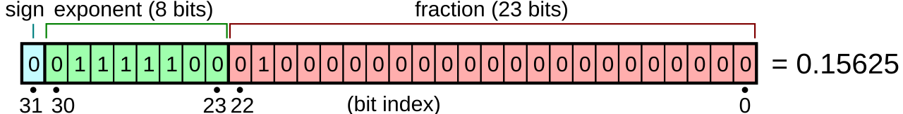
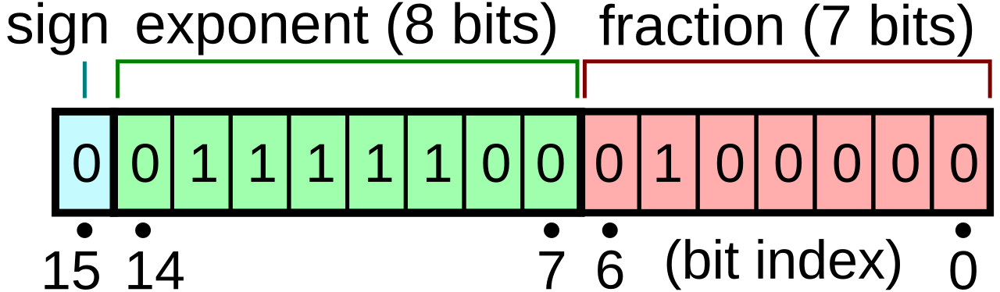
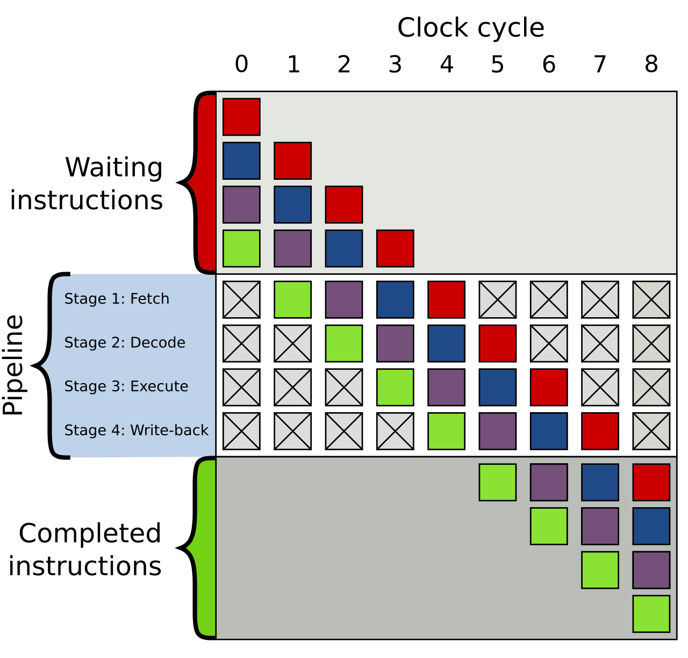

Foundations: Computer Architecture for ML Engineers
Prerequisites
- The toolkit - running commands in a terminal, setting up a Python environment for the examples, and especially reading C (pointers, arrays, structs, compiling with
clang/gcc): several experiments in this chapter are short C programs.
Apart from that, it assumes only Python, PyTorch and the math of deep learning. Forward links: the Linux and OS chapter (the OS side of pages, processes and /sys), Concurrency (threads), Networking (NICs, RDMA, InfiniBand), and the GPU execution model.
This chapter is for the reader who can write a transformer from scratch in PyTorch but has never had to think about what happens beneath tensor.cuda(). It starts from bits and ends at the point where the rest of this book's hardware chapters - compute, storage, network - and the GPU execution model chapter should read as natural continuations rather than a wall of acronyms.
The goal is not to turn you into a hardware designer. The goal is that when someone says "this job is PCIe-bound", "the dataloader is on the wrong NUMA node" or "decode is memory-bandwidth-bound", you know what physical thing they mean, why it is the bottleneck, and how to check it with arithmetic before you check it with a profiler.
The chapter is organized bottom-up:
- Bits, bytes and number representation
- Units and the classic mistakes
- The CPU
- The memory hierarchy
- Bandwidth vs latency
- Virtual memory at the hardware level
- NUMA
- Buses and interconnects
- Storage devices
- The GPU
- Arithmetic intensity and the roofline model
- A map of a GPU server
- You can now read
- Further reading
A note on numbers: every hardware number in this chapter is either a published spec (stated as such), a derivation with the arithmetic shown, or an order-of-magnitude figure explicitly marked as approximate. Real hardware varies by SKU (the exact product model), firmware, BIOS settings (the machine's low-level firmware configuration) and the phase of the moon, so treat the approximate figures as "the right power of ten", not as something to put in a capacity plan.
A note on code: nearly every section has something to run. Pure-Python examples need only python3 plus numpy; examples marked [torch] need pip install torch numpy in a virtualenv (e.g. python3 -m venv /tmp/venv && /tmp/venv/bin/pip install torch numpy); C examples need any C compiler (clang on macOS via xcode-select --install, gcc on Linux). Outputs pasted below come from one run on an Apple M4 laptop (4 performance + 6 efficiency cores, 16 GiB unified memory, macOS 15) while it was busy with other jobs, so treat absolute numbers as anecdotes and look at the ratios. Commands marked untested need Linux and/or an NVIDIA GPU and were not run while writing this chapter - they follow documented tools, but verify on your machine.
In console blocks, a line starting with $ is a command typed at a terminal prompt (don't type the $); the lines after it are that command's output. Commands like lscpu, numactl, taskset, lspci and files under /sys and /proc are Linux tools for inspecting hardware: each is explained where it's used, and the Linux and OS chapter right after this one covers the OS side properly. sudo in front of a command means "run it as the administrator (root)"; on a shared cluster you usually can't.
Names used before they are explained. This chapter refers to some hardware and software by name before reaching the section (or later chapter) that explains it. Just enough to keep reading:
- GPU, H100, SXM, HGX. The GPU is the accelerator that runs your tensors' math. The H100 is NVIDIA's datacenter GPU launched in 2022 and serves as this chapter's running example; SXM is its socketed-module form factor (as opposed to a plug-in PCIe card), and HGX is NVIDIA's 8-GPU board design. All of it is explained in The GPU.
- HBM is the GPU's own memory (high bandwidth memory); an SM (streaming multiprocessor) is one of the GPU's ~100+ cores; tensor cores are its matrix-multiply units. Both are explained in The pieces.
- CUDA is NVIDIA's platform for programming its GPUs (a driver, a runtime library and a C++ dialect). A kernel in GPU-speak is one function launched on the GPU, e.g. one matmul;
cudaMemcpyis CUDA's function that copies memory between CPU and GPU. Explained in The host/device split. (The operating-system kernel is a different thing: the core program of the OS that manages hardware for all other programs - see Linux and OS.) - PCIe, NVLink, NVSwitch are the links that connect GPUs to the CPU and to each other - explained in Buses and interconnects.
- NIC (network interface card) is the device that connects a machine to the network. InfiniBand and RoCE are the network technologies GPU clusters use between machines, and RDMA (remote direct memory access) lets one machine's NIC read or write another machine's memory without involving either CPU. TCP is the ordinary internet protocol. All are taught in Networking.
- Rank, all-reduce, NCCL,
torchrun. Distributed training runs one process per GPU; each process is a rank, numbered from 0. A collective is an operation every rank must call together; the all-reduce is the collective that sums a buffer (e.g. the gradients) across all ranks and leaves the sum on every one, and data-parallel training does one every step. NCCL ("nickel") is NVIDIA's library that performs such collectives between GPUs, andtorchrunis PyTorch's launcher that starts one training process per GPU. First defined properly in Concurrency, introduced in Networking, derived in collectives internals. - Slurm is the job scheduler most GPU clusters use to hand out machines; containers (e.g. Docker) package a program with its libraries; both restrict a process to some CPUs and memory with a Linux mechanism called cgroups. Kubernetes is the other common way to run work on a cluster: it schedules containers across many machines. See cgroups, Slurm from zero, Docker from zero and Kubernetes from zero.
Bits, bytes and number representation
Why binary
A computer stores and moves information as voltages on wires and charges in capacitors. Distinguishing two levels (high/low) reliably at billions of transitions per second is much easier than distinguishing ten, so the unit of information is the bit: 0 or 1.
Eight bits make a byte, the smallest unit most hardware can address. A byte holds 2^8 = 256 distinct patterns. What those patterns mean is entirely a matter of convention - the same 8 bits 11111111 are 255 as an unsigned integer, -1 as a signed integer, and a NaN-ish garbage value if you reinterpret them as part of a float. The hardware doesn't know; the instruction you execute decides.
Bit patterns are usually written in hexadecimal (base 16), because one hex digit is exactly 4 bits: 0xFF = 1111 1111 = 255, 0x3F80_0000 is a 32-bit pattern you'll meet below.
Multi-byte values have a byte order, endianness. x86 and (in practice) ARM servers (the two main CPU families, introduced in The CPU) are little-endian: the least significant byte sits at the lowest address. You will rarely care, except when parsing binary file formats by hand.
You can look at all of this from Python. The point of the snippet is that bytes have no inherent meaning: the same byte is 255 or -1, and the same 4 bytes are an integer or a float, depending only on how you choose to read them.
# why_binary.py
import struct, sys
x = 255
print(f"{x:d} = 0b{x:08b} = 0x{x:02X}")
raw = bytes([0xFF])
print("as uint8:", int.from_bytes(raw, "little", signed=False))
print("as int8: ", int.from_bytes(raw, "little", signed=True))
v = 0x3F800000
print("0x3F800000 as fp32:", struct.unpack("<f", v.to_bytes(4, "little"))[0])
print("int32 1 little-endian bytes:", (1).to_bytes(4, "little").hex(" "))
print("int32 1 big-endian bytes: ", (1).to_bytes(4, "big").hex(" "))
print("this machine is", sys.byteorder, "endian")
Output:
255 = 0b11111111 = 0xFF
as uint8: 255
as int8: -1
0x3F800000 as fp32: 1.0
int32 1 little-endian bytes: 01 00 00 00
int32 1 big-endian bytes: 00 00 00 01
this machine is little endian
The same idea is behind tensor.view(torch.int32) on a float tensor, np.frombuffer, and every hand-written parser for a .safetensors header or a binary token file: you are telling the machine how to interpret bytes it otherwise knows nothing about. Get the dtype or the byte order wrong and you get garbage, not an error.
Unsigned and signed integers
An unsigned n-bit integer is just the binary number: range 0 .. 2**n - 1.
For signed integers essentially all hardware uses two's complement: the top bit has weight -2**(n-1) instead of +2**(n-1). For int8:
bit weight: -128 64 32 16 8 4 2 1
0000 0001 = 1 -> 1
0111 1111 = 64 +32 +16 +8 +4 +2 +1 -> 127
1000 0000 = -128 -> -128
1111 1111 = -128 + 127 -> -1
Why this odd scheme? Because addition is the same circuit for signed and unsigned numbers: you add the bits and throw away the carry out of the top. -1 + 1 = 1111\,1111 + 0000\,0001 = 1\,0000\,0000, drop the carry, get 0. No special cases, no "negative zero". To negate: flip all bits and add 1.
The consequence you'll actually hit is overflow wraps around silently:
import numpy as np
print(np.array([127], dtype=np.int8) + np.int8(1)) # [-128]
The ML-relevant integer limits:
| Type | Range | Where it bites |
|---|---|---|
| int8 | -128 .. 127 | quantized weights/activations, needs a scale factor |
| int32 | -2,147,483,648 .. 2,147,483,647 | tensor indexing: a tensor with more than 2**31 elements breaks kernels that index with int32 |
| int64 | about +-9.2e18 | PyTorch's default index type (torch.long), token ids |
The int32 row is not hypothetical: a single (B, T, V) logits tensor of 8 \times 8192 \times 131072 = 8.6 \times 10^9 elements is past 2^{31} = 2.1 \times 10^9, and kernels that compute offsets in 32-bit arithmetic have historically produced wrong results or crashes on such tensors.
Floating point: IEEE 754
Integers have uniform spacing. ML needs numbers from 1e-8 (small gradients) to 1e4 (unnormalized logits) with roughly constant relative precision. Floating point is scientific notation in binary:
A float32 laid out as sign, exponent and mantissa:

(source)

- sign: 1 bit.
- exponent: e bits, stored with a bias (
2**(e-1) - 1) so it can be negative. The exponent sets the range. - mantissa (also called fraction or significand): m bits. Since every normalized binary number starts with
1., that leading 1 is implicit and not stored - a free bit. The mantissa sets the precision.
Two exponent values are reserved: all-zeros means subnormal numbers (the implicit leading bit becomes 0, letting values fade gradually to zero instead of jumping), and all-ones means infinity or NaN.
The key quantity for precision is machine epsilon, the gap between 1.0 and the next representable number: 2**-m. Anything smaller than about half of that added to 1.0 simply vanishes.
Here are the formats you'll meet, with the limits derived from the bit layout (computed with Python, not copied):
| Format | Sign | Exp | Mantissa | Bias | Max normal | Min normal | Epsilon 2**-m |
~Decimal digits |
|---|---|---|---|---|---|---|---|---|
| fp32 | 1 | 8 | 23 | 127 | 3.40e38 | 1.18e-38 | 1.19e-7 | 7.2 |
| tf32 (compute only) | 1 | 8 | 10 | 127 | ~3.40e38 | 1.18e-38 | 9.77e-4 | 3.3 |
| bf16 | 1 | 8 | 7 | 127 | 3.39e38 | 1.18e-38 | 7.81e-3 | 2.4 |
| fp16 | 1 | 5 | 10 | 15 | 65504 | 6.10e-5 | 9.77e-4 | 3.3 |
| fp8 E5M2 | 1 | 5 | 2 | 15 | 57344 | 6.10e-5 | 0.25 | 0.9 |
| fp8 E4M3 | 1 | 4 | 3 | 7 | 448 | 1.56e-2 | 0.125 | 1.2 |
| fp4 E2M1 | 1 | 2 | 1 | 1 | 6 | 1.0 | 0.5 | 0.6 |
Bit layouts, most significant bit on the left:
fp32 S EEEEEEEE MMMMMMMMMMMMMMMMMMMMMMM 32 bits
bf16 S EEEEEEEE MMMMMMM 16 bits = top half of fp32
fp16 S EEEEE MMMMMMMMMM 16 bits
E5M2 S EEEEE MM 8 bits = top half of fp16
E4M3 S EEEE MMM 8 bits
E2M1 S EE M 4 bits
Notes on the table:
- E4M3 as used on NVIDIA/OCP (Open Compute Project, an industry standards group) hardware (sometimes called
E4M3FN) breaks IEEE convention: it has no infinities and only uses the all-ones pattern for NaN, which is how it reaches 448 instead of 240. E5M2 keeps IEEE-style inf/NaN. - tf32 is not a storage format. It's what NVIDIA tensor cores use internally when you let them multiply fp32 inputs: the inputs are rounded to a 10-bit mantissa, the accumulation is in fp32. Tensors in memory remain 32 bits wide.
- fp4 values are so coarse (E2M1 can represent exactly
0, 0.5, 1, 1.5, 2, 3, 4, 6and their negatives) that they are only usable with block scaling: a small block of values (e.g. 16 or 32 elements) shares a higher-precision scale factor. The MX formats (MXFP8, MXFP6, MXFP4) and NVIDIA's NVFP4 are such schemes. The same idea is increasingly applied to fp8.
You can see the bits yourself:
import struct, numpy as np
def fp32_bits(x):
(u,) = struct.unpack(">I", struct.pack(">f", x))
b = f"{u:032b}"
return f"{b[0]} {b[1:9]} {b[9:]}" # sign | exponent | mantissa
def to_bf16(x): # bf16 = top 16 bits of fp32, round-to-nearest-even
(u,) = struct.unpack(">I", struct.pack(">f", x))
u = (u + 0x7FFF + ((u >> 16) & 1)) & 0xFFFF0000
return struct.unpack(">f", struct.pack(">I", u))[0]
for x in [1.0, 0.1, 65504.0, 70000.0, 1e-8]:
print(f"{x:>9} fp32 {fp32_bits(x)} fp16={float(np.float16(x))!r:<24} bf16={to_bf16(x)!r}")
print("1 + 1e-3 in fp16:", float(np.float16(1) + np.float16(1e-3)))
print("1 + 1e-3 in bf16:", to_bf16(1 + 1e-3))
print("256 + 1 in bf16:", to_bf16(256 + 1))
print("2**24 + 1 in fp32:", np.float32(2**24) + np.float32(1))
Output (numpy will also warn about the fp16 overflow):
1.0 fp32 0 01111111 00000000000000000000000 fp16=1.0 bf16=1.0
0.1 fp32 0 01111011 10011001100110011001101 fp16=0.0999755859375 bf16=0.10009765625
65504.0 fp32 0 10001110 11111111110000000000000 fp16=65504.0 bf16=65536.0
70000.0 fp32 0 10001111 00010001011100000000000 fp16=inf bf16=70144.0
1e-08 fp32 0 01100100 01010111100110001110111 fp16=0.0 bf16=1.0011717677116394e-08
1 + 1e-3 in fp16: 1.0009765625
1 + 1e-3 in bf16: 1.0
256 + 1 in bf16: 256.0
2**24 + 1 in fp32: 16777216.0
Read that output carefully, because each line is an ML failure mode:
0.1is not representable in any binary float. Every format stores a nearby value.70000overflows fp16 toinf. One overflowed activation or gradient and the loss is NaN.1e-8underflows fp16 to0. Small gradients silently vanish.1 + 1e-3in bf16 is1.0. bf16 can't see a 0.1% update to a value of magnitude 1. This is why optimizer states and master weights are kept in fp32 even in "bf16 training":w += lr * gwith \text{lr} \cdot g \sim 10^{-5} and w \sim 1 is a no-op in bf16.256 + 1in bf16 is256. bf16 can't count past 256 exactly. fp32 can't count past 2^{24} = 16{,}777{,}216 exactly - never accumulate a token counter or a long sum in a low-precision float.
Why range vs precision is the ML tradeoff
With a fixed bit budget, every bit goes to either the exponent (range) or the mantissa (precision). The history of ML number formats is this tradeoff being renegotiated:
- fp16 has 10 mantissa bits (good precision) but only 5 exponent bits: max 65504, smallest normal
6.1e-5. Gradients routinely fall below that, so fp16 training needs loss scaling: multiply the loss by e.g. 1024 before backward so gradients land in range, divide them back before the optimizer step, and dynamically back off when you overflow. - bf16 ("brain float", from Google) takes fp32's 8-bit exponent and keeps just 7 mantissa bits. It has the same range as fp32, so no loss scaling, and converting fp32 to bf16 is just dropping (rounding off) the low 16 bits. Neural nets turned out to tolerate the low precision far better than the low range, which is why bf16 became the default training format.
- fp8 halves the bytes again. The common recipe uses E4M3 (more precision) for weights and activations in the forward pass and E5M2 (more range) for gradients, with per-tensor or per-block scale factors maintained alongside.
bfloat16 keeps float32's 8 exponent bits and drops 16 mantissa bits:

(source)

Why bother with fewer bits at all? Two reasons, both of which this chapter will quantify later:
- Bytes moved. Half the bits means half the memory traffic. Many ML operations are limited by how fast bytes can be moved, not by arithmetic (see roofline).
- Silicon area. A multiplier's area grows roughly with the square of the mantissa width, so a chip can fit many more bf16 or fp8 multipliers than fp32 ones in the same area and power. That's why each halving of precision has historically roughly doubled the advertised peak tensor-core FLOPS - see the TFLOPS comparison table.
One more subtlety: low-precision matmuls almost always accumulate in higher precision. A bf16 matmul multiplies bf16 pairs but sums the products in fp32, because adding thousands of products in bf16 would lose most of the result to rounding (the 256 + 1 = 256 problem above, applied to a dot product of length 4096).
You don't need to memorize the table: PyTorch will tell you the limits of each format, and a few lines show the fp16 underflow problem and why loss scaling fixes it. [torch]
# range_precision.py
import torch
for dt in [torch.float32, torch.bfloat16, torch.float16, torch.float8_e4m3fn, torch.float8_e5m2]:
fi = torch.finfo(dt) # max, smallest normal ("tiny"), epsilon
print(f"{str(dt):22} max={fi.max:<12.4g} tiny={fi.tiny:<10.3g} eps={fi.eps:.3g}")
g = torch.tensor([1e-3, 1e-5, 1e-7, 1e-9]) # (4,) typical small gradient magnitudes
print("\nfp16 raw: ", g.half().tolist())
print("bf16 raw: ", g.bfloat16().tolist())
S = 1024.0 # a static loss scale
print("fp16 scaled/S: ", (g * S).half().float().div(S).tolist())
w = torch.tensor(1.0)
upd = torch.tensor(1e-4) # lr * grad
print("\nbf16 w + 1e-4:", (w.bfloat16() + upd.bfloat16()).item())
print("fp32 w + 1e-4:", (w + upd).item())
Output (torch 2.x on CPU):
torch.float32 max=3.403e+38 tiny=1.18e-38 eps=1.19e-07
torch.bfloat16 max=3.39e+38 tiny=1.18e-38 eps=0.00781
torch.float16 max=6.55e+04 tiny=6.1e-05 eps=0.000977
torch.float8_e4m3fn max=448 tiny=0.0156 eps=0.125
torch.float8_e5m2 max=5.734e+04 tiny=6.1e-05 eps=0.25
fp16 raw: [0.0010004043579101562, 1.0013580322265625e-05, 1.1920928955078125e-07, 0.0]
bf16 raw: [0.00099945068359375, 1.0013580322265625e-05, 1.0011717677116394e-07, 9.968061931431293e-10]
fp16 scaled/S: [0.0010004043579101562, 9.998679161071777e-06, 1.00000761449337e-07, 9.89530235528946e-10]
bf16 w + 1e-4: 1.0
fp32 w + 1e-4: 1.000100016593933
What to notice:
1e-5and1e-7survive in raw fp16 even though they're below fp16's smallest normal number (6.1e-5): they're stored as subnormals, with fewer significant bits (1e-7came back as1.19e-7, a 19% error).1e-9is below even the smallest subnormal (2^{-24} = 6 \times 10^{-8}) and becomes exactly 0. That's a gradient that silently stopped existing.- Multiplying by S = 1024 before the cast moves every value into fp16's comfortable range; dividing afterwards (in fp32) recovers them to ~3 significant digits. That's all loss scaling is. PyTorch's
torch.amp.GradScalerdoes the same thing, pickingSdynamically: it growsSuntil a step overflows to inf, then skips that step and halvesS. - bf16 keeps
1e-9(fp32's range), but1.0 + 1e-4in bf16 is still1.0(bf16's precision). Range and precision fail in different places, and you need both answers before choosing a format.
Try this
- Run
why_binary.py, then reinterpret the float-0.0as bits (struct.pack(">f", -0.0).hex()). Why does-0.0 == 0.0returnTrueeven though the bits differ? - Using
np.float16, find the largest integerksuch thatnp.float16(k) + np.float16(1) != np.float16(k). Predict it first from the mantissa width (hint: 10 stored bits plus the implicit one). - Sum
[0.1] * 10_000_000in fp32 with a plain Python loop usingnp.float32(slow, but run it for10**6), then withmath.fsum. How far apart are they, and why doesnp.sumon the same array get much closer? (Hint: numpy uses pairwise summation.) - Change
Sinrange_precision.pyto2**20and add a gradient of100.0. What happens in fp16? That's the overflow thatGradScalerdetects and backs off from. - Build a
(8, 8192, 131072)shape in your head: how many elements, and does it fit in int32 indexing? Check with Python, don't guess.
Units and the classic mistakes
Getting units wrong by 8x or 7% is the most common arithmetic error in capacity planning. The rules:
Decimal vs binary prefixes.
| Decimal (SI) | Binary (IEC) | Ratio |
|---|---|---|
| 1 KB = 10**3 bytes | 1 KiB = 2**10 = 1024 | 1.024 |
| 1 MB = 10**6 | 1 MiB = 2**20 | 1.049 |
| 1 GB = 10**9 | 1 GiB = 2**30 | 1.074 |
| 1 TB = 10**12 | 1 TiB = 2**40 | 1.100 |
The gap grows with each prefix: 2.4% at kilo, 10% at tera.
Who uses what, in practice:
- Disks are sold in decimal. A "1 TB" NVMe (a fast SSD; see Storage devices) is 10^{12} / 2^{30} = 931\ \text{GiB}, which is what
df -h(the disk-space command) will show you (it prints binary units but labels themG, notGi). - DRAM (the computer's ordinary main memory, its RAM) and HBM capacity is physically binary (DRAM dies come in power-of-two-ish densities) but often printed as GB. An "80GB" H100 has about 80GiB physically;
nvidia-smi(NVIDIA's command-line GPU status tool) reports 81559MiB available, which is 81559 \cdot 2^{20} / 10^9 = 85.5 decimal GB. See the accelerator memory section for how messy this gets. - Bandwidth (memory, PCIe, NVLink, network) is almost always decimal: 1 GBps = 10^9 bytes/s.
- Software tools are inconsistent. (
dfreports disk space,freereports RAM,ls -lhlists files with sizes; all are terminal commands.) Python'storch.cuda.memory_allocated()returns bytes; you choose.free -gis GiB.ls -lhis binary with a misleadingG.
Bits vs bytes per second. Network and serial-link speeds are quoted in bits per second (lowercase b): Gbps or Gb/s. Memory and storage are in bytes per second (uppercase B): GBps or GB/s. Divide bits by 8:
- a 400 Gbps NIC moves at most 400 / 8 = 50 GBps
- 8 such NICs per node is 8 \cdot 50 = 400 GBps - which is less than the 450 GBps unidirectional NVLink bandwidth of a single H100. That one comparison explains a great deal of model parallelism design.
Transfers vs bytes. Serial links (PCIe, DRAM pins) are quoted in GT/s (gigatransfers per second) per lane or per pin. One transfer is one bit per lane, minus encoding overhead: PCIe 3-5 use 128b/130b encoding (1.5% overhead), PCIe 6 uses a FLIT scheme (fixed-size packets with built-in error correction) with about 5.5% overhead. So "PCIe 5 is 32 GT/s" means 32 \cdot \frac{128}{130} / 8 = 3.94 GBps per lane per direction. The buses section does the full table.
Unidirectional vs bidirectional. Many links are full-duplex: they carry the full rate in each direction at once. Marketing often quotes the sum of both directions. NVLink 4 is "900 GBps" bidirectional, 450 GBps each way. If you're sending a tensor from GPU A to GPU B, the number that matters is 450. See Unidirectional vs Bidirectional.
FLOPs vs FLOPS. FLOPs (lowercase s) is a count of floating point operations; FLOPS (or FLOP/s) is a rate. A multiply-add counts as 2 FLOPs. See MACs vs FLOP vs FLOPS vs FLOP/s.
Dense vs sparse FLOPS. Accelerator spec sheets often lead with a "with sparsity" number that is 2x the dense one, valid only for 2:4 structured-sparse matrices (exactly 2 of every 4 consecutive values are zero) that ordinary training doesn't produce. Always use the dense number.
The checklist before trusting any bandwidth or capacity calculation: bits or bytes? decimal or binary? one direction or both? dense or sparse? spec or measured?
Every conversion above as five functions, so you can stop doing them in your head:
# units.py
def gbps_to_GBps(gbit): return gbit / 8 # bits -> bytes
def tb_disk_in_gib(tb): return tb * 1e12 / 2**30 # decimal TB -> GiB
def mib_to_gb(mib): return mib * 2**20 / 1e9 # nvidia-smi MiB -> decimal GB
def pcie_GBps(gt_s, lanes, enc=128/130): return gt_s * 1e9 * enc * lanes / 8 / 1e9
print(f"400 Gbps NIC = {gbps_to_GBps(400):.0f} GBps")
print(f"8 x 400 Gbps NICs = {8 * gbps_to_GBps(400):.0f} GBps (vs 450 GBps NVLink4 per direction)")
print(f"'1 TB' NVMe = {tb_disk_in_gib(1):.0f} GiB")
print(f"81559 MiB (H100 80GB) = {mib_to_gb(81559):.1f} GB")
print(f"PCIe 5 x16 = {pcie_GBps(32, 16):.1f} GBps per direction")
print(f"NVLink4 '900 GBps' = {900/2:.0f} GBps per direction")
print(f"KiB/KB {2**10/1e3:.3f} MiB/MB {2**20/1e6:.3f} GiB/GB {2**30/1e9:.3f} TiB/TB {2**40/1e12:.3f}")
Output:
400 Gbps NIC = 50 GBps
8 x 400 Gbps NICs = 400 GBps (vs 450 GBps NVLink4 per direction)
'1 TB' NVMe = 931 GiB
81559 MiB (H100 80GB) = 85.5 GB
PCIe 5 x16 = 63.0 GBps per direction
NVLink4 '900 GBps' = 450 GBps per direction
KiB/KB 1.024 MiB/MB 1.049 GiB/GB 1.074 TiB/TB 1.100
Try this
- On your laptop, compare
df -h /withdf -H /(macOS and GNU coreutils both support-Hfor powers of 1000). Which one matches the number on the box your disk came in? - A spec sheet says a NIC is "800G". A colleague estimates a 140 GB checkpoint takes 140 / 800 = 0.18\ \text{s} to send. Find all the mistakes (there are at least two) and compute a realistic lower bound.
- Look up the HBM bandwidth and the "with sparsity" bf16 TFLOPS of any recent accelerator. Convert both to dense, per-direction, decimal units and compute the ratio
FLOPS / bandwidth. You'll use that ratio in the roofline section.
The CPU
Instructions and the clock
A CPU executes a stream of instructions: tiny operations like "load 8 bytes from address X into register R1", "add R1 and R2 into R3", "if R3 is zero, jump to address Y". The set of instructions a CPU understands is its ISA (instruction set architecture). Servers are almost all x86-64 (Intel Xeon, AMD EPYC) or ARM64 (e.g. NVIDIA Grace, AWS Graviton). Your Python interpreter, PyTorch's C++ core, and CUDA driver are all compiled down to one of these.
Registers are a few dozen named storage slots inside the core, each 64 bits wide (plus wider vector registers, below). All arithmetic happens on registers; memory is only reached via load and store instructions.
The CPU is driven by a clock: an oscillator ticking at, say, 3 GHz, i.e. one cycle every 1 / (3 \times 10^9) = 0.33 ns. In 0.33 ns light travels about 10 cm. This is not a trivia point: it's why signals can't cross a large chip, let alone reach memory centimeters away, in one cycle, and why everything far from the core costs many cycles.
Why not just raise the clock? Dynamic power scales roughly with P \propto C V^2 f (capacitance, voltage squared, frequency), and higher frequency needs higher voltage, so power grows much faster than linearly with clock. Clocks hit a power/heat wall around 2005 at 3-5 GHz and have barely moved since. Every performance gain after that came from doing more per cycle and from more cores - which is the story of the rest of this section, and ultimately why GPUs won ML.
You can see real instructions in two minutes. Here is a C function compiled for this ARM64 laptop, next to the Python bytecode for the same addition. (C refresher: long is a 64-bit integer, const float *x is a pointer to the first of several floats, and x[1] reads the float one element after it - see the reading-C part of the toolkit. clang -O2 -S -o - add.c means "compile with optimizations, stop at assembly, print it to the screen" instead of producing a program.)
// add.c
long add3(long a, long b, long c) { return a + b + c; }
float dot4(const float *x, const float *y) {
return x[0]*y[0] + x[1]*y[1] + x[2]*y[2] + x[3]*y[3];
}
$ clang -O2 -S -o - add.c | grep -vE '^\s*(\.|;|$)|^l' # strip assembler directives
_add3: ; @add3
add x8, x1, x0
add x0, x8, x2
ret
_dot4: ; @dot4
ldp s0, s1, [x0]
ldp s2, s3, [x1]
fmul s1, s1, s3
fmadd s0, s0, s2, s1
ldp s1, s2, [x0, #8]
ldp s3, s4, [x1, #8]
fmadd s0, s1, s3, s0
fmadd s0, s2, s4, s0
ret
$ python3 -c "import dis; dis.dis(lambda a, b, c: a + b + c)"
1 RESUME 0
LOAD_FAST_BORROW_LOAD_FAST_BORROW 1 (a, b)
BINARY_OP 0 (+)
LOAD_FAST_BORROW 2 (c)
BINARY_OP 0 (+)
RETURN_VALUE
Read the assembly: add x8, x1, x0 adds registers x1 and x0 into x8; ldp s0, s1, [x0] loads a pair of 32-bit floats from the address in x0; fmadd is a fused multiply-add (one instruction, two FLOPs). add3 is two machine instructions. The Python version is six bytecodes, and each BINARY_OP runs (roughly) dozens to hundreds of machine instructions in the interpreter (type checks, reference counting, dispatch) before it gets to the one add that does the work. That ratio is the "interpreter overhead" behind "pure Python is 50-100x slower than numpy". On x86 Linux, gcc -O2 -S -o - add.c shows the same thing with lea/add, and mulss/addss for the floats (FMA is not part of baseline x86-64; add -march=native on a recent CPU to see vfmadd instructions).
Pipelining
Executing an instruction involves several steps: fetch it from memory, decode it, read its operands, execute, write the result. Doing them one instruction at a time leaves most of the circuitry idle. Pipelining overlaps them, like a laundry with a washer and a dryer: while instruction 1 executes, instruction 2 decodes and instruction 3 is fetched.
A 4-stage pipeline overlapping four instructions:

(source)

cycle: 1 2 3 4 5 6 7
instr 1: [F] [D] [E] [W]
instr 2: [F] [D] [E] [W]
instr 3: [F] [D] [E] [W]
instr 4: [F] [D] [E] [W]
Each instruction still takes 4 cycles (latency), but one finishes every cycle (throughput). This latency-vs-throughput distinction will recur at every level of this chapter. Modern cores have pipelines of roughly 15-20 stages.
Pipelines stall on hazards: an instruction that needs the result of the previous one has to wait for it, and a branch (an if) means the CPU doesn't know which instruction to fetch next until the condition is computed.
Superscalar and out-of-order execution
A modern core has several execution units (multiple integer ALUs, i.e. arithmetic logic units; multiple vector units; multiple load/store ports) and can issue several independent instructions per cycle - it's superscalar. Current server cores can decode and retire (finish and commit the result of) roughly 4-8 instructions per cycle in the best case.
To find enough independent instructions, the core executes out of order: it looks ahead through a window of a few hundred upcoming instructions, runs whichever ones have their inputs ready, and retires results in the original order so the program can't tell. When one load is waiting on slow memory, the core keeps running unrelated instructions behind it. A large fraction of a CPU core's transistors exist purely to do this bookkeeping.
The metric for how well this works is IPC (instructions per cycle). Well-behaved numeric code may hit 2-4; code that constantly waits on memory can drop below 0.5.
You can watch out-of-order, superscalar execution help or fail to help with a ten-line experiment. Summing an array with one accumulator makes every addition wait for the one before it (a dependency chain): a floating-point add takes a few cycles of latency, so the core sits idle between them no matter how many adders it has. Four independent accumulators give the core four chains to interleave.
How to read the C programs in this chapter (they all share this skeleton): #include lines import library headers, like Python imports; #define N (1 << 24) is a named constant; now() is a small helper that returns the current time in seconds as a double, the C equivalent of time.perf_counter(); malloc(N * sizeof(float)) allocates a raw buffer of N floats (like np.empty(N, dtype=np.float32), and just as uninitialized); main is where the program starts; printf is formatted printing, with %.2f meaning "a float with 2 decimals" and %zu/%d/%p meaning an unsigned size, an int and a pointer. The console block below each program shows the two commands: clang -O2 -o ilp ilp.c compiles the source into an executable called ilp, and ./ilp runs it. If anything else is unfamiliar, the reading-C part of the toolkit covers it.
// ilp.c - one dependency chain vs four independent ones. Same number of adds.
#include <stdio.h>
#include <stdlib.h>
#include <time.h>
#define N (1 << 24)
static double now(void){struct timespec t; clock_gettime(CLOCK_MONOTONIC,&t); return t.tv_sec+t.tv_nsec*1e-9;}
int main(void){
float *x = malloc(N * sizeof(float));
for (int i = 0; i < N; i++) x[i] = 1.0f / (i + 1);
for (int rep = 0; rep < 2; rep++) {
double t = now(); float s = 0;
for (int i = 0; i < N; i++) s += x[i]; // each add waits for the previous
double t1 = now() - t;
t = now(); float a=0,b=0,c=0,d=0;
for (int i = 0; i < N; i += 4) { a += x[i]; b += x[i+1]; c += x[i+2]; d += x[i+3]; }
double t4 = now() - t;
printf("1 chain: %.2f ms (%.2f ns/add) 4 chains: %.2f ms (%.2f ns/add) sums %.4f %.4f\n",
t1*1e3, t1/N*1e9, t4*1e3, t4/N*1e9, s, a+b+c+d);
}
}
$ clang -O2 -o ilp ilp.c && ./ilp
1 chain: 14.16 ms (0.84 ns/add) 4 chains: 4.98 ms (0.30 ns/add) sums 15.4037 16.4197
1 chain: 10.04 ms (0.60 ns/add) 4 chains: 3.01 ms (0.18 ns/add) sums 15.4037 16.4197
Three things to take away:
- 3-4x faster with identical arithmetic, purely from exposing independent work. The compiler won't do this for you for floats (without
-ffast-math, a compiler flag that permits such reordering), because reordering float additions changes the result. - It does change the result: 15.4037 vs 16.4197. The exact sum of 1/i for i up to 2^{24} is 17.2127 (computed in Python with fp64). Both fp32 answers are wrong, because once the running sum is around 15, adding terms smaller than ~1e-6 rounds to no change at all (fp32's epsilon at 15 is ~1e-6). Four partial sums each stay smaller, so they lose less. This is the same reason reductions in fp32 across GPUs aren't bitwise reproducible when the reduction order changes.
- GPUs and BLAS libraries (the standard linear-algebra libraries that numpy and PyTorch call for matmuls) apply the same trick at massive scale: a matmul kernel keeps many independent accumulators in registers per thread.
Branch prediction
With a 15-20 stage pipeline, waiting for every if to resolve would waste ~15-20 cycles per branch. Instead the CPU predicts which way the branch goes, based on its history, and speculatively executes down that path. Predictors are very good (well above 95% accuracy on typical code). A misprediction means throwing away the speculative work: a penalty on the order of 15-20 cycles, ~5 ns at 3-4 GHz.
ML relevance: mostly indirect. Data-dependent branching inside an inner loop (e.g. per-element if in a tokenizer or a custom data filter) can run several times slower on random data than on sorted data. And it's one reason GPU-style hardware, which has essentially no branch prediction, wants branch-free code.
The classic demonstration: the same loop over the same numbers, once shuffled and once sorted. With sorted data the branch v[i] >= 128 is false for the first half and true for the second, so the predictor is almost always right. With random data it's a coin flip. (New C here: qsort(w, N, sizeof(int), cmp) is the C library's sort, which takes a comparison function cmp the way Python's sorted takes key; srand(0) seeds the random generator and rand() % 256 draws an integer in 0..255; __asm__ volatile("") inserts an empty assembly statement, explained after the output.)
// branch.c
#include <stdio.h>
#include <stdlib.h>
#include <time.h>
#define N (1 << 24)
static double now(void){struct timespec t; clock_gettime(CLOCK_MONOTONIC,&t); return t.tv_sec+t.tv_nsec*1e-9;}
static int cmp(const void *a, const void *b){ return *(int*)a - *(int*)b; }
static long run(const int *v){
long s = 0;
for (int i = 0; i < N; i++)
if (v[i] >= 128) { s += v[i]; __asm__ volatile(""); } // empty asm stops the compiler making it branch-free
return s;
}
int main(void){
int *v = malloc(N * sizeof(int));
srand(0); for (int i = 0; i < N; i++) v[i] = rand() % 256;
int *w = malloc(N * sizeof(int));
for (int i = 0; i < N; i++) w[i] = v[i];
qsort(w, N, sizeof(int), cmp);
for (int rep = 0; rep < 3; rep++) {
double t = now(); long a = run(v); double tr = now() - t;
t = now(); long b = run(w); double ts = now() - t;
printf("random: %5.1f ms sorted: %5.1f ms (same sum: %d)\n", tr*1e3, ts*1e3, a == b);
}
}
$ clang -O2 -o branch branch.c && ./branch
random: 52.1 ms sorted: 5.8 ms (same sum: 1)
random: 50.5 ms sorted: 4.9 ms (same sum: 1)
random: 53.5 ms sorted: 4.4 ms (same sum: 1)
About 10x. Per element, the random run costs ~3 ns versus ~0.3 ns; with half the branches mispredicted that's roughly 5-6 ns per miss, in line with the table below. The interesting failure, which I hit while writing this: without the empty asm statement, clang -O2 rewrites the if into a branch-free conditional select (csel on ARM, cmov on x86) and vectorizes the loop, and both versions run in ~1.2 ms. The compiler knows this trick; your Python tokenizer's inner loop doesn't get it.
SIMD: one instruction, many numbers
A scalar add adds two 64-bit numbers. A SIMD (single instruction, multiple data) instruction adds two vectors held in wide registers:
| Extension | Register width | fp32 lanes | bf16 lanes | Notes |
|---|---|---|---|---|
| SSE | 128 bits | 4 | - | baseline x86-64 |
| AVX2 | 256 bits | 8 | - | nearly universal on x86 servers |
| AVX-512 | 512 bits | 16 | 32 | Intel Xeon; AMD since Zen 4 |
| ARM NEON | 128 bits | 4 | 8 | baseline ARM64 |
| ARM SVE/SVE2 | 128-2048 bits (implementation-defined) | varies | varies | Grace's Neoverse V2 implements 128-bit SVE2 |
A fused multiply-add (FMA) instruction computes a \cdot b + c per lane, which counts as 2 FLOPs. Peak per-core FLOPS is therefore:
That 7.2 TFLOPS is an upper bound that real code rarely approaches - and some Intel generations lower the clock when heavy AVX-512 code runs.
AMX (Advanced Matrix Extensions, Intel Xeon since Sapphire Rapids) goes beyond vectors: it adds eight 1 KiB tile registers (16 rows of 64 bytes) and a matrix-multiply unit that multiplies tiles of bf16 or int8. Intel quotes 1024 bf16 operations per cycle per core. The same arithmetic as above, 1024 * 2.0e9 * 56 = 115 TFLOPS bf16, is a theoretical ceiling that I'd expect real kernels to land well below. It's the same idea as GPU tensor cores (a dedicated matrix unit), and it's why recent CPUs can do respectable small-batch inference, but it's still about an order of magnitude below a single H100's 989 dense bf16 TFLOPS.
You almost never write SIMD yourself. numpy, PyTorch's CPU kernels, and oneDNN (Intel's library of CPU deep-learning kernels) do. What you need to know is that a loop in pure Python executes perhaps tens of millions of simple operations per second, while the same loop vectorized via numpy can be 100x faster - partly because it skips the interpreter, partly because of SIMD.
Cores and hardware threads
A core is a complete copy of the above: pipeline, execution units, registers, L1/L2 caches. A server CPU socket (one physical chip, or several chiplets in one package) has tens to over a hundred cores. A server has one or two sockets.
Simultaneous multithreading (SMT; Intel calls it Hyper-Threading) lets one core hold the state of two instruction streams (two hardware threads) at once. When one stream is stalled waiting on memory, the other uses the idle execution units. It's a cheap way to fill pipeline bubbles, not a second core: two threads share one core's execution units and caches. For compute-bound SIMD code, the second hardware thread adds roughly nothing, sometimes less than nothing. For stall-heavy code (pointer chasing, I/O) it helps.
The trap: the OS, nproc (a command that prints the CPU count), os.cpu_count() and htop (an interactive process viewer) count hardware threads, not cores. A machine showing 224 "CPUs" may have 2 sockets x 56 cores x 2 threads. Check with lscpu, which prints the CPU layout on Linux (here filtered with grep -E, from the toolkit's regex section):
lscpu | grep -E "^(Socket|Core|Thread|CPU\(s\)|NUMA node)"
Example output shape (fields are real, values illustrative):
CPU(s): 224
Thread(s) per core: 2
Core(s) per socket: 56
Socket(s): 2
NUMA node(s): 2
On a Linux box, the cache sizes and which hardware threads share a core are in /sys, a directory of read-only "files" the kernel fills with hardware information (untested here, Linux-only). grep . FILES prints every non-empty line of each file, prefixed with the file name; index* is a wildcard matching index0, index1, ...; a PU ("processing unit") is a hardware thread:
$ lscpu -e=CPU,CORE,SOCKET,NODE | head -4 # CPU 0 and CPU 112 sharing CORE 0 = SMT siblings
CPU CORE SOCKET NODE
0 0 0 0
1 1 0 0
2 2 0 0
$ cat /sys/devices/system/cpu/cpu0/topology/thread_siblings_list
0,112
$ grep . /sys/devices/system/cpu/cpu0/cache/index*/size
/sys/devices/system/cpu/cpu0/cache/index0/size:48K
/sys/devices/system/cpu/cpu0/cache/index1/size:32K
/sys/devices/system/cpu/cpu0/cache/index2/size:2048K
/sys/devices/system/cpu/cpu0/cache/index3/size:107520K
$ lstopo-no-graphics --no-io # from the hwloc package: the whole tree, sockets -> caches -> cores -> PUs
(The sizes shown are illustrative of a recent Xeon, not from a real run.) On a Mac the equivalent is sysctl, which prints named hardware and kernel settings (a \ at the end of a line continues the command on the next line); here is the laptop these examples ran on - note it has heterogeneous cores, 4 performance ("perflevel0") and 6 efficiency ("perflevel1"), and no SMT:
$ sysctl hw.perflevel0.physicalcpu hw.perflevel1.physicalcpu hw.perflevel0.l1dcachesize \
hw.perflevel0.l2cachesize hw.perflevel1.l2cachesize hw.cachelinesize hw.pagesize \
hw.memsize machdep.cpu.brand_string \
hw.optional.arm.FEAT_BF16 hw.optional.arm.FEAT_FP16 hw.optional.arm.FEAT_SME hw.optional.arm.FEAT_SME2
hw.perflevel0.physicalcpu: 4
hw.perflevel1.physicalcpu: 6
hw.perflevel0.l1dcachesize: 131072
hw.perflevel0.l2cachesize: 16777216
hw.perflevel1.l2cachesize: 4194304
hw.cachelinesize: 128
hw.pagesize: 16384
hw.memsize: 17179869184
machdep.cpu.brand_string: Apple M4
hw.optional.arm.FEAT_BF16: 1
hw.optional.arm.FEAT_FP16: 1
hw.optional.arm.FEAT_SME: 1
hw.optional.arm.FEAT_SME2: 1
$ python3 -c "import os; print(os.cpu_count())"
10
os.cpu_count() says 10, which hides that 6 of those cores are much slower. On Linux, the number your process may actually use can be smaller than os.cpu_count() - containers and Slurm restrict it with cgroups and CPU affinity (a per-process list of the CPUs it may run on; both are explained in Linux and OS) - so size worker pools with len(os.sched_getaffinity(0)) (Linux-only), not os.cpu_count().
When the CPU chapter tells you to budget one core per DataLoader worker, it means physical cores.
Try this
- Compile
add.cwith-O0instead of-O2and diff the assembly (save each with-o O0.s/-o O2.sinstead of-o -, thendiff O0.s O2.sprints the lines that differ). Count the extra loads and stores: at-O0the compiler spills every variable to the stack. - In
ilp.c, try 2, 8 and 16 accumulators. Where does the speedup stop? On most cores it flattens at roughlyfadd latency * number of FP add pipesindependent chains; estimate both numbers from your measurement. - In
branch.c, replace theifwith the branch-frees += v[i] * (v[i] >= 128);and remove theasm. Now does sorting matter? - Run
python3 -c "import numpy; numpy.show_config()"and find which SIMD extensions your numpy build detected (look for "SIMD Extensions" / "found"). - On a Linux server, compare
nproc,os.cpu_count()andlen(os.sched_getaffinity(0))inside and outside ataskset -c 0-3 python3 ...invocation (taskset -c 0-3 cmdrunscmdrestricted to CPUs 0-3; untested here).
The memory hierarchy
The problem: the memory wall
A core at 3 GHz can issue a couple of loads every 0.33 ns cycle. Main memory (DRAM) answers a request in roughly 80-120 ns - that's 250-400 cycles of doing nothing. Over decades, CPU speed improved much faster than DRAM latency, which has been roughly flat for 20 years. This gap is the memory wall, and the entire memory hierarchy exists to hide it.
The classic memory pyramid - faster and smaller towards the top:
(source)

Why is DRAM slow? A DRAM bit is a tiny capacitor that leaks and has to be refreshed; reading it means sensing a minuscule charge through long wires; and the DRAM chips sit centimeters away from the CPU on the motherboard. SRAM, the memory caches are built from, uses ~6 transistors per bit instead of 1 transistor + 1 capacitor: much faster, much less dense, much more expensive per bit. You can't build gigabytes of it on a CPU die, but you can build megabytes.
So we build a pyramid: small and fast near the core, big and slow far away.
+-----------+ registers ~1 KiB/core ~0 cycles
| REG |
+-------------+ L1 cache ~32-64 KiB/core ~4-5 cycles
| L1 |
+---------------+ L2 cache ~1-2 MiB/core ~12-16 cycles
| L2 |
+-------------------+ L3 cache ~tens-hundreds MiB/socket, shared ~40-100+ cycles
| L3 |
+-------------------------+ DRAM ~hundreds GiB - few TiB ~250-400 cycles
| DRAM |
+-------------------------------+ NVMe ~TBs ~100,000+ cycles
| storage |
+-------------------------------+
Cache sizes and latencies vary considerably by generation and vendor (AMD's X3D parts stack extra L3 on top; large server meshes have notably slower L3 than desktop chips). Use the shape, not the exact numbers.
Latency numbers every ML engineer should know
This is an updated version of the classic table attributed to Jeff Dean and Peter Norvig, adjusted toward 2024-2026 server hardware and extended with ML-relevant rows. These are orders of magnitude, not benchmarks: your hardware will differ, sometimes by 2x. The right column rescales so that 1 ns becomes 1 second, which makes the ratios visceral.
| Operation | Approx. latency | If 1 ns were 1 s |
|---|---|---|
| One CPU cycle at 3 GHz | 0.3 ns | 0.3 s |
| L1 cache hit | ~1 ns | 1 s |
| Branch mispredict | ~5 ns | 5 s |
| L2 cache hit | ~3-5 ns | 4 s |
| L3 cache hit | ~10-35 ns | 20 s |
| Local DRAM access | ~80-120 ns | 1.5 min |
| Remote-socket DRAM access (NUMA) | ~130-200 ns | 3 min |
| GPU: an SM reading HBM (uncached) | ~0.5 us (uncertain, see note) | 8 min |
| GPU: CPU-side cost of launching one CUDA kernel | ~2-10 us | 1.5 hours |
| RDMA small message, same rack, one way | ~1-3 us | 30 min |
Small host-to-device cudaMemcpy |
~5-10 us | 2 hours |
| TCP round trip inside a datacenter | ~10-100 us | 3-28 hours |
| NVMe SSD 4 KiB random read | ~50-100 us | ~22 hours |
| Read 1 MB sequentially from NVMe at 7 GBps | ~140 us | 1.6 days |
| HDD seek + rotational delay | ~5-10 ms | ~2-4 months |
| Round trip US east coast <-> west coast | ~60-70 ms | ~2 years |
Notes:
- The GPU HBM latency row is the one I'm least sure of. Published microbenchmarks of recent NVIDIA datacenter GPUs put a global-memory miss in the hundreds of nanoseconds (several hundred to ~1000 cycles at ~1.5-2 GHz). The important point is that it's worse than CPU DRAM latency, not better - GPUs are fast because of bandwidth and parallelism, not latency.
- The kernel launch and
cudaMemcpyrows are a large part of why small-batch inference and tiny ops are slow, and why CUDA Graphs (replaying a recorded sequence of launches as one) and kernel fusion (merging several small kernels into one) exist. Details are in the execution model chapter. - The coast-to-coast row is bounded by physics: light in fiber travels at ~200,000 km/s, so ~4,000 km takes ~20 ms one way, ~40 ms round trip at the very least; real routes are longer.
Don't take the table on faith: you can measure the memory rows of it on your own machine in about 30 lines of C. The trick is pointer chasing: build a random cycle through a buffer where each element stores the address of the next one. Each load's address depends on the previous load's result, so the out-of-order core cannot overlap them, and the time per step is the true load-to-use latency of whichever level of the hierarchy the buffer fits in.
C details in this one: size_t is an unsigned 64-bit integer used for sizes; aligned_alloc(LINE, bytes) is malloc that also guarantees the buffer starts on a cache-line boundary; void * is "an address of anything" and void ** is "an address of a slot that holds an address". So *(void **)(buf + k * LINE) = ... stores an address into node k, and the timed loop p = (void **)*p means "load the address stored where p points, and go there" - Python's node = node.next for a linked list.
// chase.c - measure load-to-use latency by pointer chasing a random cycle.
#include <stdio.h>
#include <stdlib.h>
#include <time.h>
static double now(void){struct timespec t; clock_gettime(CLOCK_MONOTONIC,&t); return t.tv_sec+t.tv_nsec*1e-9;}
int main(void){
const size_t LINE = 128; // one node per cache line (128 B on Apple M; use 64 on x86)
for (size_t bytes = 16 << 10; bytes <= (512u << 20); bytes *= 4) {
size_t n = bytes / LINE;
char *buf = aligned_alloc(LINE, bytes);
size_t *perm = malloc(n * sizeof(size_t));
for (size_t i = 0; i < n; i++) perm[i] = i;
for (size_t i = n - 1; i > 0; i--) { size_t j = rand() % (i + 1), t = perm[i]; perm[i] = perm[j]; perm[j] = t; }
for (size_t i = 0; i < n; i++) // node perm[i] points to node perm[i+1]
*(void **)(buf + perm[i] * LINE) = buf + perm[(i + 1) % n] * LINE;
void **p = (void **)(buf + perm[0] * LINE);
size_t steps = 20 * 1000 * 1000;
double t = now();
for (size_t i = 0; i < steps; i++) p = (void **)*p;
t = now() - t;
printf("%9zu KiB %6.1f ns/load (%p)\n", bytes >> 10, t / steps * 1e9, (void *)p); // print p so the loop isn't optimized away
free(buf); free(perm);
}
}
$ clang -O2 -o chase chase.c && ./chase # Apple M4, performance core
16 KiB 0.9 ns/load (0x12700af80)
64 KiB 0.9 ns/load (0x128008500)
256 KiB 7.0 ns/load (0x12801fe00)
1024 KiB 11.1 ns/load (0x1180de880)
4096 KiB 30.8 ns/load (0x1080bce80)
16384 KiB 96.7 ns/load (0x107305b80)
65536 KiB 106.4 ns/load (0x1103fbc00)
262144 KiB 111.0 ns/load (0x13bf96580)
You can read the hierarchy straight off it: ~0.9 ns while the buffer fits in the 128 KiB L1 data cache of an M4 performance core (sysctl hw.perflevel0.l1dcachesize reports 131072), a jump once it spills to the 16 MiB shared L2, and a plateau around 100-110 ns once it's DRAM-sized - the "1.5 minutes" row in the table. The steps between 256 KiB and 16 MiB are a mix of L2 latency and TLB misses (the TLB is a small cache of address translations for memory pages, explained in Virtual memory below; at 16 KiB pages, a 4 MiB buffer is 256 pages, and every random access may need a fresh translation); separating the two needs hardware counters (event counts such as cache and TLB misses, which the CPU keeps and profilers like perf read), which I didn't use. On x86 Linux, set LINE = 64, compile with gcc -O2, and pin to one core with taskset -c 2 ./chase (untested here); expect the same shape with different breakpoints.
Cache lines and locality
Caches don't store individual bytes. They store cache lines: aligned 64-byte blocks on x86 and most ARM server cores (Apple's M-series uses 128 bytes). When you read one float32 from DRAM, the hardware fetches the whole 64-byte line containing it - 16 floats - because the cost of a DRAM access is dominated by latency, so you might as well bring the neighbors.
That bet pays off because real programs have locality:
- Spatial locality: if you touched address X, you'll probably touch X+4 soon. Walking an array sequentially uses every byte of every fetched line.
- Temporal locality: if you touched X, you'll probably touch X again soon. Reusing data while it's still in cache avoids going back to DRAM.
On top of caching, a hardware prefetcher watches the access pattern and, if it sees a steady stride, starts fetching lines before you ask for them. Sequential access is the easy case for prefetchers; random access defeats them.
Caches also keep the cores coherent: if core 0 writes a line that core 5 has cached, core 5's copy is invalidated. Two threads writing different variables that happen to sit in the same 64-byte line will ping-pong that line between cores (false sharing) - a classic way for a multi-threaded data pipeline to scale negatively.
False sharing is easy to provoke. Two threads each increment their own counter; the only thing that changes between runs is whether the two counters sit in the same cache line. (pthread_create(&a, NULL, bump, arg) starts a new thread - a second flow of execution inside the same process, sharing its memory - running bump(arg), like threading.Thread(target=bump, args=(arg,)).start() in Python; pthread_join waits for it to finish, like .join(). volatile tells the compiler to really perform every read and write of the counter instead of keeping it in a register. Threads are covered properly in Concurrency.)
// false_sharing.c - two threads, two different counters. Only their distance in memory changes.
#include <pthread.h>
#include <stdio.h>
#include <time.h>
#define ITERS 200000000L
static double now(void){struct timespec t; clock_gettime(CLOCK_MONOTONIC,&t); return t.tv_sec+t.tv_nsec*1e-9;}
static _Alignas(256) volatile long slots[64]; // 512 bytes, aligned to a line boundary
static void *bump(void *p){ volatile long *c = p; for (long i = 0; i < ITERS; i++) (*c)++; return NULL; }
static double run(int gap){ // gap in longs between the two counters
pthread_t a, b; double t = now();
pthread_create(&a, NULL, bump, (void *)&slots[0]);
pthread_create(&b, NULL, bump, (void *)&slots[gap]);
pthread_join(a, NULL); pthread_join(b, NULL);
return now() - t;
}
int main(void){
for (int rep = 0; rep < 2; rep++)
printf("same line (8 B apart): %.2f s different lines (256 B apart): %.2f s\n", run(1), run(32));
}
$ clang -O2 -o false_sharing false_sharing.c && ./false_sharing # Linux: gcc -O2 -pthread
same line (8 B apart): 0.42 s different lines (256 B apart): 0.24 s
same line (8 B apart): 0.38 s different lines (256 B apart): 0.19 s
A 2x slowdown for doing exactly the same work, because every increment forces the line to move between the two cores' caches. On large multi-socket x86 servers, where the line has to cross a mesh or a socket link, the penalty is typically much larger. The fix is padding: put per-thread data at least one cache line apart (C: _Alignas(64), C++: alignas(std::hardware_destructive_interference_size)). In Python you rarely control layout this precisely, but the same effect shows up one level up in shared-memory ring buffers and per-worker statistics arrays written by many processes.
Experiment: why a strided loop is slow
Here's a tiny experiment you can run on any machine. We take a 256 MiB array - much bigger than any cache, so every line comes from DRAM - and sum every element, then every 2nd, every 4th, and so on:
import time, numpy as np
a = np.ones(64 * 1024 * 1024, dtype=np.float32) # 256 MiB, far bigger than any cache
def bench(f, reps=5):
best = float("inf")
for _ in range(reps):
t = time.perf_counter(); f(); best = min(best, time.perf_counter() - t)
return best
print(f"{'stride':>6} {'elems':>10} {'ms':>8} {'ns/elem':>8}")
for s in [1, 2, 4, 8, 16, 32, 64, 128]:
v = a[::s] # a view, no copy
t = bench(lambda: v.sum())
print(f"{s:>6} {v.size:>10} {t*1e3:>8.1f} {t/v.size*1e9:>8.2f}")
On the Apple M4 laptop this chapter was written on (128-byte cache lines), one run gave:
stride elems ms ns/elem
1 67108864 7.7 0.11
2 33554432 4.1 0.12
4 16777216 4.0 0.24
8 8388608 4.0 0.47
16 4194304 3.9 0.94
32 2097152 5.1 2.45
64 1048576 2.9 2.77
128 524288 1.5 2.84
How to read it:
- From stride 2 to stride 32 we do 16x less arithmetic and the time doesn't change (~4 ms). We're not paying for the additions; we're paying for cache lines. With 128-byte lines holding 32 floats, every stride up to 32 still touches every line of the array, so the same 256 MiB crosses the memory bus.
- At stride 64 the time finally halves, then halves again at 128: now we skip whole lines, and fewer lines are fetched.
- Stride 1 is ~2x slower than stride 2 in total time here, despite touching the same lines; my interpretation (not verified with hardware counters) is that at stride 1 the single core is limited by doing 2x the additions, not by fetching lines, while the strided runs are pure line-fetch cost. On an x86 machine with 64-byte lines, expect the plateau to end at stride 16 instead of 32.
- The cost per useful element goes from 0.11 ns to ~2.8 ns: 25x worse for the same work, purely from access pattern.
The lesson generalizes directly to tensors. A PyTorch tensor is a flat buffer plus strides. x.T or x[:, ::2] creates a view with non-unit strides; a kernel reading it walks memory non-contiguously and wastes most of each line. This is why .contiguous() exists, why "channels-last" memory format matters for convolutions, and why the layout of the K matrix in attention matters. GPUs have the same issue, at a larger scale, under the name memory coalescing (covered in the execution model chapter).
A second experiment shows the prefetcher and the cost of randomness. Same indices, two orders:
import time, numpy as np
n = 16 * 1024 * 1024 # 16M float32 = 64 MiB
a = np.random.rand(n).astype(np.float32)
seq = np.arange(n) # visit in order
rnd = np.random.permutation(n) # same indices, shuffled
for name, idx in [("sequential", seq), ("random", rnd)]:
t = time.perf_counter(); a[idx].sum(); t = time.perf_counter() - t
print(f"{name:>10}: {t*1e3:7.1f} ms {t/n*1e9:5.2f} ns/elem")
On the same M4, random order was about 3x slower (two runs: 81.5 vs 34.6 ms, 92.5 vs 27.6 ms). Why only 3x when a DRAM miss is ~100 ns and we're at ~5 ns per element? Because these loads are independent: an out-of-order core keeps many misses in flight at once (memory-level parallelism), overlapping their latencies. If each address depended on the previous load's result (a linked list, a tree walk), no overlap would be possible and you'd pay the full latency on every step. Hold onto this idea - "keep many requests in flight to hide latency" - because it's precisely the principle a GPU is built around.
This is also the physical reason random-access dataset reads are slower than sequential ones, one level further down the hierarchy.
Try this
- Run
chase.cwithLINE = 8instead of 128 (keep the random permutation). Nodes now share lines; does small-buffer latency change? Does large-buffer latency change? Explain with spatial locality. - Replace the random permutation in
chase.cwith the identity (perm[i] = i, so each node points to the next line). The loads are still dependent - so why is it much faster at DRAM sizes? (Hint: the prefetcher.) - In the strided-sum experiment, repeat with
float64and withint8. Where does the plateau end now, in elements and in bytes? - Take a
(4096, 4096)float32 numpy arrayx. Timex.sum(axis=0)vsx.sum(axis=1), andx.T.copy()vsx.copy(). Which one walks memory with stride 1? Then do the same with a torch tensor and.contiguous(). - Change
gapinfalse_sharing.cthrough1, 2, 4, 8, 16, 32longs. At which gap does the penalty disappear, and does that matchsysctl hw.cachelinesize(orgetconf LEVEL1_DCACHE_LINESIZEon Linux)?
Bandwidth vs latency
These are two different properties and confusing them is the root of many wrong predictions.
- Latency: how long until the first byte arrives. Units: seconds.
- Bandwidth: how many bytes per second flow once things are moving. Units: bytes/s.
The water-pipe intuition: latency is the length of the pipe - how long a drop takes to get from one end to the other. Bandwidth is the pipe's width - how much water per second comes out once it's flowing. A very long, very wide pipe (a transcontinental fiber, or HBM) has high latency and high bandwidth. A short narrow pipe has the opposite. Widening a pipe doesn't make the first drop arrive sooner.
The first-order model of moving n bytes is:
and so the effective bandwidth you observe is:
Worked example: a host-to-device copy over PCIe 5 x16. Take ~55 GBps as the measured bandwidth (see PCIe, where an 8x H200 node measured 55.4 GBps) and assume ~10 us fixed overhead per copy (an illustrative round number in the range of the latency table above; measure your own):
| Bytes copied | time = 10\ \mu\text{s} + n / 55\ \text{GBps} | Effective bandwidth | % of link |
|---|---|---|---|
| 4 B | 10.0 us | 0.0004 GBps | ~0% |
| 4 KiB | 10.1 us | 0.41 GBps | 0.7% |
| 1 MiB | 29.1 us | 36 GBps | 66% |
| 1 GiB | 19.5 ms | 55.0 GBps | ~100% |
The size at which you get half the peak bandwidth is \text{latency} \times \text{bandwidth} = 10^{-5} \times 55 \times 10^9 = 550\ \text{KB}. Below that you're latency-bound and the link width is irrelevant; above it you're bandwidth-bound. Every link in the system - DRAM, PCIe, NVLink, InfiniBand, NVMe - has its own version of this crossover, and it's why:
- many small copies are catastrophically slower than one big copy,
- collective communication libraries bucket small gradients into large messages,
- network benchmarks report bandwidth as a function of message size and small messages never reach the headline number.
Little's law ties the two together. To sustain bandwidth B over a path with latency L, you need B \cdot L bytes in flight at all times (DDR5 below is the current generation of DRAM, detailed in NUMA):
A single CPU core can only track a limited number of outstanding cache misses (on the order of tens), which is why one thread can't saturate a socket's memory bandwidth and why memory-bound CPU code needs many threads. A GPU needs megabytes in flight, which is why it needs tens of thousands of threads. Same law, different scale.
The model and a measurement, side by side. The first half recomputes the PCIe table above; the second times np.copyto (a memcpy) on this laptop for sizes from 64 bytes to 256 MiB:
# eff_bw.py - (1) the model time = latency + n/bandwidth; (2) measure it for host memcpy.
import time, numpy as np
lat, bw = 10e-6, 55e9 # the PCIe example from the text
for n in [4, 4 << 10, 1 << 20, 1 << 30]:
t = lat + n / bw
print(f"model {n:>11,} B {t*1e6:9.1f} us {n/t/1e9:7.3f} GBps")
print(f"half-peak size = lat*bw = {lat*bw/1e3:.0f} KB\n")
for n in [64, 4 << 10, 64 << 10, 1 << 20, 16 << 20, 256 << 20]:
src = np.ones(n, dtype=np.uint8); dst = np.empty_like(src)
reps = max(3, (1 << 28) // n) # ~256 MiB moved per size
np.copyto(dst, src) # warm up (page faults, caches)
t = time.perf_counter()
for _ in range(reps): np.copyto(dst, src)
t = (time.perf_counter() - t) / reps
print(f"memcpy {n:>11,} B {t*1e6:9.3f} us {n/t/1e9:7.2f} GBps")
Output (Apple M4, one run):
model 4 B 10.0 us 0.000 GBps
model 4,096 B 10.1 us 0.407 GBps
model 1,048,576 B 29.1 us 36.077 GBps
model 1,073,741,824 B 19532.6 us 54.972 GBps
half-peak size = lat*bw = 550 KB
memcpy 64 B 0.228 us 0.28 GBps
memcpy 4,096 B 0.280 us 14.61 GBps
memcpy 65,536 B 1.233 us 53.14 GBps
memcpy 1,048,576 B 16.039 us 65.38 GBps
memcpy 16,777,216 B 665.063 us 25.23 GBps
memcpy 268,435,456 B 14261.597 us 18.82 GBps
Three regimes in one table:
- 64 B - 4 KiB: overhead-bound. ~0.2 us is the fixed cost of a numpy call from Python, which dwarfs the time to move 64 bytes. This is the same shape as the PCIe model, with Python call overhead playing the role of link latency.
- 64 KiB - 1 MiB: cache-resident. Source and destination both fit in the 16 MiB L2, so the copy runs at cache bandwidth.
- 16 MiB and up: DRAM-bound. Now every byte is read from and written back to DRAM, so the bus carries 2x the bytes shown. A single core also can't keep enough misses in flight to saturate the memory system (Little's law again) - the M4's memory is specified much faster than ~19 GBps x 2.
A second run while the machine was loaded by other jobs gave 2-10x lower numbers in every row - a reminder to benchmark on a quiet machine and to report the conditions.
Try this
- Change
latineff_bw.pyto 2 us (a fast RDMA message; see the glossary at the top) andbwto 50e9 (one 400 Gbps NIC). What's the half-bandwidth message size now? Compare with the default bucket size of PyTorch DDP (DistributedDataParallel, which all-reduces gradients in buckets ofbucket_cap_mb=25MB). - Modify the memcpy loop to use 2, 4 and 8 threads (each copying its own slice with
np.copyto, which releases the GIL - Python's global interpreter lock, which normally lets only one thread run Python code at a time; see the concurrency chapter). Does the 256 MiB row scale? At what thread count does it flatten? - Use Little's law: if one core can have ~20 outstanding 64-byte misses and DRAM latency is 100 ns, what's the max bandwidth one core can pull? Compare with your measurement.
Virtual memory at the hardware level
This section covers the hardware mechanism. How the OS uses it - page faults, the page cache, mmap, swapping, overcommit - is covered in the sibling chapter Foundations: Linux and the OS.
Pages and address translation
Every process sees its own private virtual address space: pointer values in your program are virtual addresses, not locations in physical DRAM. This gives isolation (one process can't scribble on another's memory) and flexibility (the OS can put your memory anywhere, or nowhere until you touch it).
Memory is managed in fixed-size pages, 4 KiB by default on x86-64. The OS keeps a page table per process mapping virtual page numbers to physical page frames. On x86-64 it's a 4-level (or 5-level) tree, so translating one address in software would take 4-5 dependent memory reads - unacceptable on every load.
The MMU (memory management unit) does translation in hardware, and the TLB (translation lookaside buffer) caches recent translations. A TLB hit costs roughly nothing. A TLB miss triggers a page walk: the hardware walks the page table tree, each step potentially a cache miss, costing from tens to hundreds of cycles.
You can watch virtual memory work from Python. Allocating memory only reserves virtual addresses; physical pages are assigned lazily the first time each page is touched, via a page fault - a trap into the kernel, which finds a free physical page, zeroes it, and installs the mapping:
# pages.py
import mmap, resource, time, numpy as np
page = mmap.PAGESIZE
print("page size:", page, "bytes")
def faults(): return resource.getrusage(resource.RUSAGE_SELF).ru_minflt # "minor" faults: no disk read needed
def rss_mib(): return resource.getrusage(resource.RUSAGE_SELF).ru_maxrss / 2**20 # macOS reports bytes; Linux KiB (use / 2**10)
n = 256 << 20 # 256 MiB
f0 = faults()
a = np.empty(n, dtype=np.uint8) # reserves virtual address space only
print(f"after np.empty(256 MiB): minor faults +{faults()-f0:>7}, peak RSS {rss_mib():6.0f} MiB")
t = time.perf_counter()
a[::page] = 1 # touch one byte per page
t = time.perf_counter() - t
nf = faults() - f0
print(f"after touching each page: minor faults +{nf:>7}, peak RSS {rss_mib():6.0f} MiB")
print(f"expected faults n/page = {n // page}; {t*1e3:.0f} ms total, {t/nf*1e9:.0f} ns per fault")
t = time.perf_counter(); a[::page] = 2; t = time.perf_counter() - t
print(f"second pass (already mapped): {t*1e3:.1f} ms")
Output (macOS on Apple silicon, where pages are 16 KiB; on x86-64 Linux you'd see 4096):
page size: 16384 bytes
after np.empty(256 MiB): minor faults + 1, peak RSS 25 MiB
after touching each page: minor faults + 16385, peak RSS 281 MiB
expected faults n/page = 16384; 12 ms total, 704 ns per fault
second pass (already mapped): 0.1 ms
np.empty of 256 MiB costs one fault and no memory. Touching one byte per page costs exactly one fault per page (16384 of them), ~0.7 us each, and resident memory (RSS, resident set size: physical memory actually backing the process) grows by 256 MiB. The second pass over the same pages is ~100x faster because the translations now exist. This is why the first iteration of a training loop, or the first read of a freshly allocated buffer, is slow, and why "virtual memory size" in top (the live process list) means almost nothing. The OS side of this (overcommit, the OOM killer, mmap of files) is in the Linux chapter.
Huge pages and TLB reach
A TLB has a limited number of entries - on the order of 64 in the first-level data TLB and 1-2 thousand in the second level, depending on the core. The amount of memory the TLB can cover without misses is its reach:
(Real TLBs have separate, differently-sized entry pools for each page size, so treat this as illustrative.)
8 MiB is tiny compared to a multi-GiB working set like a dataset buffer, an embedding table being looked up at random, or a CPU-offloaded optimizer state. Every random access then pays a TLB miss on top of a cache miss. Huge pages (2 MiB, or 1 GiB on x86-64) cut the number of translations by 512x or 262144x. Linux can use them automatically (transparent huge pages, THP) or explicitly (hugetlbfs); the policy side is in the Linux chapter.
Checking THP and huge-page usage on a Linux box (untested here, Linux-only; the bracketed word is the active setting). cat prints a file and grep PATTERN file prints only its matching lines; /proc/meminfo is a file the kernel fills with memory statistics; $(pgrep -f train.py | head -1) is replaced by the process ID of the first running process whose command line contains train.py:
$ cat /sys/kernel/mm/transparent_hugepage/enabled
always [madvise] never
$ grep -E "AnonHugePages|HugePages_Total|Hugepagesize" /proc/meminfo
AnonHugePages: 10485760 kB
HugePages_Total: 0
Hugepagesize: 2048 kB
$ grep AnonHugePages /proc/$(pgrep -f train.py | head -1)/smaps_rollup # THP use of one process
Why this matters for GPUs: pinned memory
Devices like GPUs, NICs and NVMe drives copy memory using DMA (next sections), and DMA engines work with physical addresses (via an IOMMU, which is a TLB for devices). That creates a problem: the OS is free to move or swap out (write to disk to free RAM; see Swap) a virtual page at any moment, so a device can't safely DMA from an ordinary page.
The solution is pinned (page-locked) memory: pages the OS promises not to move. When you call tensor.cuda() on an ordinary ("pageable") CPU tensor, the CUDA driver first copies it into an internal pinned staging buffer and only then DMAs it to the GPU - two copies, and the call is synchronous. With pin_memory=True in the DataLoader the batch is placed in pinned memory up front, the copy is a single DMA, and .to("cuda", non_blocking=True) can overlap with compute. See Pinned memory and non-blocking device copy.
Pinned memory is a finite resource: pinning tens of GiB reduces what the OS can manage and can starve the rest of the system.
Measuring the difference yourself takes a dozen lines. [GPU], untested (no NVIDIA GPU on the machine writing this). Preview of two GPU tools explained in The host/device split: GPU work is queued and runs asynchronously, so torch.cuda.synchronize() waits until the GPU has finished everything queued, and a torch.cuda.Event pair records GPU-side timestamps around queued work:
# pinned_vs_pageable.py
import time, torch
assert torch.cuda.is_available()
n = 256 << 20 # 256 MiB
dst = torch.empty(n, dtype=torch.uint8, device="cuda")
for pinned in [False, True]:
src = torch.empty(n, dtype=torch.uint8, pin_memory=pinned)
dst.copy_(src); torch.cuda.synchronize() # warm up
t0 = time.perf_counter()
dst.copy_(src, non_blocking=True) # how long does the *call* take?
t_call = time.perf_counter() - t0
torch.cuda.synchronize()
start, end = torch.cuda.Event(enable_timing=True), torch.cuda.Event(enable_timing=True)
start.record()
for _ in range(10): dst.copy_(src, non_blocking=True)
end.record(); torch.cuda.synchronize()
ms = start.elapsed_time(end) / 10
print(f"pinned={pinned!s:5} call returned in {t_call*1e3:6.2f} ms copy {ms:6.2f} ms {n/ms/1e6:6.1f} GBps")
What to expect: with pinned=True, the call returns almost immediately (the copy is queued on the GPU) and the bandwidth is close to what the PCIe link delivers (~55 GBps on PCIe 5 x16 per the measurement quoted below); with pinned=False, the call blocks for roughly the whole copy, and bandwidth is lower because of the extra staging copy. I'm not quoting a ratio because I haven't measured one; it depends on the host's memcpy speed. (On Apple silicon, pin_memory() succeeds but CPU and GPU share one physical memory, so there's no PCIe hop to measure.)
Try this
- In
pages.py, replacenp.emptywithnp.zeros. Does the fault count change at allocation time? (Most allocators get zeroed pages from the OS lazily, sonp.zerosfor big arrays often costs no more thannp.empty.) - Touch every 4096th byte instead of every
pageth byte on this Mac. Does the fault count go up 4x? Why not? - On Linux, run
perf stat -e dTLB-load-misses,page-faults python3 pages.py(perf statruns a command and reports hardware event counters; untested here) and compare withmadvise-backed huge pages (the[madvise]THP mode shown above, where only memory a program explicitly asks for gets huge pages) enabled vs disabled. - Allocate a 1 GiB pinned tensor in a loop until it fails, on a machine where that's safe. What fails first and with what error? (Do this on your own machine, not a shared node.)
NUMA
Multiple sockets, multiple memories
A dual-socket server is really two computers glued together. Each socket has its own memory controllers with its own DRAM attached, and the sockets are connected by a coherent link (Intel UPI, AMD Infinity Fabric / xGMI). Any core can read any memory, but reading memory attached to the other socket has to cross that link:
+-------------------+ UPI / xGMI +-------------------+
DRAM-| Socket 0 (NUMA 0) |<========================>| Socket 1 (NUMA 1) |-DRAM
DRAM-| cores 0-55 | | cores 56-111 |-DRAM
| PCIe root | | PCIe root |
+--------+----------+ +---------+---------+
| |
GPUs 0-3, NICs GPUs 4-7, NICs
This is NUMA (non-uniform memory access): latency and bandwidth depend on which memory a core touches. Remote accesses typically cost roughly 1.5-2x the latency of local ones and see lower bandwidth, because the inter-socket link has less bandwidth than the local memory channels. (Exact ratios vary by platform; numactl -H prints the firmware's relative "distance" table, where 10 means local.)
Even a single socket can be split into several NUMA nodes - Intel's sub-NUMA clustering (SNC) and AMD's NPS (nodes-per-socket) BIOS settings expose the chip's internal topology the same way.
How much bandwidth does a socket's memory have? DDR channel arithmetic: a DDR5 channel is 64 bits (8 bytes) wide, so at 4800 MT/s it moves 4800 \times 10^6 \times 8 = 38.4 GBps.
| Configuration | Arithmetic | Peak per socket |
|---|---|---|
| 8 channels DDR5-4800 | 8 * 4800e6 * 8 B | 307 GBps |
| 8 channels DDR5-5600 | 8 * 5600e6 * 8 B | 358 GBps |
| 12 channels DDR5-4800 | 12 * 4800e6 * 8 B | 461 GBps |
| 12 channels DDR5-6400 | 12 * 6400e6 * 8 B | 614 GBps |
These are spec ceilings, and only if every channel is populated - a server with half its DIMM slots (memory-stick slots) empty has half the bandwidth. Compare with the 3,350 GBps of a single H100's HBM: one GPU has roughly 5-10x the memory bandwidth of a whole CPU socket.
Why NUMA matters for ML
Each GPU and each NIC hangs off the PCIe lanes of one particular socket. Consider a DataLoader worker that runs on socket 1, builds a batch in socket 1's memory, and the training process for GPU 0 (attached to socket 0) copies it to the GPU. The DMA has to pull the bytes across the inter-socket link. Run all eight ranks this way and the socket link becomes a shared bottleneck, plus the cores pay remote latency for every cache miss in the data pipeline.
The fix is affinity: pin each rank's process (in distributed training a rank is one of the training processes, normally one per GPU), its dataloader workers and its memory allocations to the socket its GPU is attached to. To find out which that is:
nvidia-smi topo -m # the "CPU Affinity" and "NUMA Affinity" columns per GPU
numactl -H # NUMA nodes, their CPUs, memory sizes and distances
lscpu | grep NUMA # which CPU ids belong to which NUMA node
# a PCIe device's NUMA node, by its bus id (e.g. from nvidia-smi -q):
cat /sys/bus/pci/devices/0000:18:00.0/numa_node
How to apply it - numactl, os.sched_setaffinity, pynvml, srun (Slurm's command for launching processes) - is in NUMA affinity.
The two-line version of "apply it", for one rank whose GPU sits on NUMA node 0 (untested here, Linux-only):
$ numactl --cpunodebind=0 --membind=0 python train.py # run on node 0's cores, allocate from node 0's DRAM
$ python3 -c "import os; os.sched_setaffinity(0, range(0, 56)); print(sorted(os.sched_getaffinity(0))[:4], '...')"
[0, 1, 2, 3] ...
$ numastat -p $(pgrep -f train.py | head -1) # per-node memory of a running process
Try this
- On any Linux server, run
numactl -Hand find the distance matrix. Is it 2 nodes or more? If a single-socket box shows several nodes, it's running with SNC/NPS enabled. - Use
nvidia-smi topo -mto build a table "GPU -> NUMA node -> CPU list" for a GPU node you have access to, then check what a running job's processes actually have:taskset -cp <pid>for each rank (untested here). - Benchmark remote vs local memory with a STREAM-like copy:
numactl --cpunodebind=0 --membind=1 python3 eff_bw.pyvs--membind=0. How big is the gap on the 256 MiB row? - Compute the per-socket DDR bandwidth of a server you use (channels x MT/s x 8 B) from
dmidecode -t memory(needs root) and compare it with one GPU's HBM bandwidth.
Buses and interconnects
PCIe
PCIe (PCI Express) is the standard way to attach devices - GPUs, NICs, NVMe drives - to a CPU. It's a serial, point-to-point, packet-based link made of lanes; each lane is a pair of differential wires in each direction, so PCIe is full-duplex. A link bundles 1, 2, 4, 8 or 16 lanes, written x1 .. x16. GPUs use x16; NVMe drives typically x4.
Why serial lanes instead of a wide parallel bus? At multi-GHz rates, keeping 32 or 64 parallel wires perfectly in sync over centimeters of motherboard is a nightmare. A few independent very fast serial lanes, each recovering its own clock from the data, scale much better. (The same reasoning is behind NVLink, Ethernet and InfiniBand.)
Each generation roughly doubles the per-lane rate:
| Generation | Rate per lane | Encoding | GBps per lane per direction | x4 per direction | x16 per direction |
|---|---|---|---|---|---|
| PCIe 3 | 8 GT/s | 128b/130b | 0.98 | 3.9 | 15.8 |
| PCIe 4 | 16 GT/s | 128b/130b | 1.97 | 7.9 | 31.5 |
| PCIe 5 | 32 GT/s | 128b/130b | 3.94 | 15.8 | 63.0 |
| PCIe 6 | 64 GT/s | PAM4 (4 voltage levels, 2 bits per signal symbol) + FLIT (242/256) | 7.56 | 30.3 | 121 |
Arithmetic for PCIe 5 x16: 32 \times 10^9\ \text{transfers/s} \times \frac{128}{130} \times 16\ \text{lanes} / 8\ \text{bits} = 63.0 GBps in each direction, 126 GBps both ways combined. These are raw link rates after line encoding; packet headers and protocol overhead take more, so measured throughput is lower - the PCIe section of the network chapter reports 55.4 GBps measured host-to-device on PCIe 5 x16, i.e. 88% of the spec.
A PCIe link runs at the lowest common generation and width of the two ends. A Gen5 GPU in a slot wired for x8, or behind a Gen4 switch, silently gets half. Check what was actually negotiated:
nvidia-smi --query-gpu=index,pcie.link.gen.current,pcie.link.width.current --format=csv
sudo lspci -vv | grep -E "LnkCap|LnkSta" # lspci lists PCIe devices; capability vs actual status, every device
(GPUs may downshift link generation when idle to save power, so check under load.)
Lanes are a budget. A server CPU socket provides a fixed number of PCIe lanes - on the order of 80 (recent Intel Xeon) to 128 (AMD EPYC) per socket. Eight GPUs at x16 already need 128 lanes, before NICs and NVMe. This is why GPU servers have PCIe switches: a switch takes one x16 uplink from the CPU and fans it out to several x16 downstream devices. Devices under the same switch can talk to each other at full speed, but they share the uplink to the CPU. The CPU's PCIe controller is called the root complex.
DMA
If the CPU had to move every byte to a device by executing load and store instructions, a 63 GBps link would occupy dozens of cores. Instead, devices do DMA (direct memory access): the CPU writes a small descriptor ("copy n bytes from physical address A to device address B") and the device's own DMA engine performs the transfer across PCIe while the CPU does other things, then raises an interrupt (a hardware signal that makes the CPU pause and run OS code) or sets a completion flag. NVIDIA GPUs have dedicated DMA engines called copy engines, which is why a host-to-device copy can run concurrently with a kernel.
DMA is why pinned memory is needed, and why "zero-copy" designs are possible at all.
The CUDA deviceQuery sample (from NVIDIA's cuda-samples repo) reports how many copy engines a GPU has, in a line like Concurrent copy and kernel execution: Yes with 2 copy engine(s) (the count varies by GPU). You can see copy engines at work from PyTorch by issuing a copy on a second stream while a matmul runs on the default one. (A stream is a queue of GPU work that runs in order; work in different streams may run at the same time. Streams are explained in The host/device split.) [GPU], untested:
# overlap.py - a host->device copy on a side stream overlaps with compute on the default stream.
import torch
x = torch.randn(8192, 8192, device="cuda") # (8192, 8192) fp32
h = torch.empty(512 << 20, dtype=torch.uint8, pin_memory=True) # 512 MiB pinned host buffer
d = torch.empty_like(h, device="cuda")
side = torch.cuda.Stream()
def timed(fn):
s, e = torch.cuda.Event(enable_timing=True), torch.cuda.Event(enable_timing=True)
torch.cuda.synchronize(); s.record(); fn(); e.record(); torch.cuda.synchronize()
return s.elapsed_time(e)
def matmuls(): [x @ x for _ in range(10)]
def copy(): d.copy_(h, non_blocking=True)
def both():
with torch.cuda.stream(side): d.copy_(h, non_blocking=True) # copy engine
matmuls() # SMs
torch.cuda.current_stream().wait_stream(side)
print(f"matmuls {timed(matmuls):.1f} ms, copy {timed(copy):.1f} ms, both overlapped {timed(both):.1f} ms")
If DMA and compute overlap, "both" is close to max(matmuls, copy), not their sum. If h is not pinned, the copy can't be done by the copy engine asynchronously and the overlap disappears.
GPUDirect: cutting the CPU and its memory out of the path
By default, data moving between a GPU and anything else goes through host memory: the device DMAs into a buffer in CPU DRAM, then the GPU DMAs it out again. That costs an extra copy, host memory bandwidth, and if the buffer is on the wrong NUMA node, a socket-link crossing. NVIDIA's GPUDirect family of technologies removes the host DRAM hop:
| Technology | Path without it | Path with it |
|---|---|---|
| GPUDirect P2P | GPU A -> host DRAM -> GPU B | GPU A -> GPU B over PCIe or NVLink |
| GPUDirect RDMA | GPU -> host DRAM -> NIC -> network | GPU <-> NIC directly over PCIe |
| GPUDirect Storage | NVMe -> host DRAM (page cache) -> GPU | NVMe -> GPU directly via DMA |
What's bypassed is host memory and the CPU's involvement in the data movement; the bytes still travel over PCIe, so the path benefits a lot from the GPU and the NIC/NVMe being under the same PCIe switch (traffic never reaches the root complex). This is why GPU servers pair each GPU with a NIC on the same switch, and why nvidia-smi topo -m labels pairs as PIX (same switch), PXB, PHB (through the host bridge), NODE or SYS (across sockets) - the further down that list, the worse.
How to check whether GPUDirect paths are actually in use on a node (untested here; module and tool names as of CUDA 12.x / recent NCCL). Preview: this block uses tools taught later - lsmod lists loaded kernel modules (drivers), NCCL_DEBUG=INFO makes NCCL log which transport it chose, and torchrun --nproc-per-node 8 script.py starts 8 copies of a script, one per GPU (see the glossary at the top, Concurrency, Networking and GPU software stack). allreduce_test.py stands for any script that does an all-reduce. Skim it now and come back:
$ nvidia-smi topo -m | head -3 # look at the GPU<->NIC entries: PIX/PXB good, SYS bad
$ lsmod | grep -E "nvidia_peermem|nv_peer_mem" # kernel module that enables GPUDirect RDMA with Mellanox/NVIDIA NICs
$ NCCL_DEBUG=INFO torchrun --nproc-per-node 8 allreduce_test.py 2>&1 | grep -E "NET/|GDRDMA" | head
# lines of the form "... via NET/IB/0/GDRDMA" mean NCCL is doing GPUDirect RDMA on that path;
# "via NET/IB/0" without GDRDMA means it's staging through host memory
$ /usr/local/cuda/gds/tools/gdscheck -p # GPUDirect Storage: which filesystems/drivers support it
NVLink and NVSwitch
PCIe is a general-purpose standard and, as the table above shows, a GPU's PCIe 5 x16 link gives ~63 GBps per direction. Training with tensor parallelism (splitting each layer's weight matrices across several GPUs, so each computes part of every matmul) needs GPUs to exchange activations every layer, so NVIDIA built a dedicated GPU-to-GPU link, NVLink. An H100 has 18 NVLink 4 links totaling 450 GBps per direction, ~7x its PCIe bandwidth. An NVSwitch is a switch chip for NVLink: in an 8-GPU HGX board, every GPU connects to the NVSwitches, so any GPU can talk to any other at full NVLink bandwidth simultaneously. In rack-scale systems (GB200 NVL72) NVSwitch extends the same fabric across a whole rack of GPUs. AMD's equivalent is Infinity Fabric; the open-standard effort is UALink. All the numbers are in NVLink.
Why this matters, in one calculation: the lower bound for a ring all-reduce of 7B parameters' worth of bf16 gradients across 8 GPUs, over each kind of link. In a ring all-reduce the GPUs are arranged in a circle and each passes chunks of the buffer to its neighbour, adding as it goes; each GPU sends (and receives) 2 * (N - 1) / N times the buffer size - derived in collectives internals.
# allreduce_links.py
N = 8
S = 7e9 * 2 # 7B params, bf16 grads = 14 GB
links = {"NVLink4 via NVSwitch (450 GBps)": 450e9,
"PCIe 5 x16 (63 GBps spec)": 63e9,
"PCIe 5 x16 (~55 GBps measured)": 55e9,
"one 400 Gbps NIC (50 GBps)": 50e9}
per_gpu = 2 * (N - 1) / N * S
print(f"bytes each GPU sends: {per_gpu/1e9:.1f} GB")
for name, bw in links.items():
print(f"{name:<34} {per_gpu/bw*1e3:8.1f} ms")
bytes each GPU sends: 24.5 GB
NVLink4 via NVSwitch (450 GBps) 54.4 ms
PCIe 5 x16 (63 GBps spec) 388.9 ms
PCIe 5 x16 (~55 GBps measured) 445.5 ms
one 400 Gbps NIC (50 GBps) 490.0 ms
An ~8x gap between NVLink and PCIe on every gradient sync. (Real all-reduces within a node over NVSwitch can use NVLS/in-switch reduction and other algorithms, so treat this as a ring-model bound, not a prediction.) Checking the links on a real node (untested here):
$ nvidia-smi nvlink --status -i 0 # per-link speed for GPU 0; an H100 SXM should list 18 links
$ nvidia-smi topo -m # "NV18" between two GPUs = connected by 18 NVLinks
Try this
- A GPU server has 4 PCIe switches, each with 2 GPUs and 1 NIC under it, and a Gen5 x16 uplink. If all 8 GPUs read training data from host memory at the same time, what's the max per-GPU host-to-device bandwidth? (Each uplink is shared by 2 GPUs.)
- Extend
allreduce_links.pywith the 2-level case: 8 GPUs per node over NVLink, 16 nodes over 8x 400 Gbps NICs per node. Which level dominates? - Run
system_profiler SPDisplaysDataTypeon a Mac orlspci -tvon Linux and draw the device tree you see. Where does the GPU hang? - On a GPU node, run
nvidia-smi --query-gpu=index,pcie.link.gen.current,pcie.link.width.current --format=csvidle and then under load (e.g. while a matmul loop runs). Do the numbers change?
CXL (Compute Express Link) is worth knowing by name: a protocol running over PCIe's physical layer that adds cache-coherent memory semantics, used for things like memory expansion cards. It's not (yet) central to GPU training, so I'll leave it there.
Storage devices
Storage is the bottom of the hierarchy: persistent (survives power loss), huge, and slow. Three device classes matter:
| Device | How it works | Interface | Sequential throughput | 4 KiB random IOPS | Typical latency |
|---|---|---|---|---|---|
| HDD | spinning magnetic platters, moving head | SATA/SAS | ~200-280 MBps | ~100-200 | ~5-10 ms |
| SATA SSD | NAND flash, behind a disk-era protocol | SATA III (6 Gbps) | ~550 MBps (cap: 600) | ~tens of thousands - ~100K | ~100 us |
| NVMe SSD | NAND flash, native PCIe | PCIe Gen4/Gen5 x4 | ~7 / ~14 GBps | ~1M+ (high queue depth) | ~50-100 us |
SATA and SAS are the older cable interfaces designed for hard disks; NVMe drives plug straight into PCIe. These are typical datasheet-class figures for current drives, rounded; individual models vary a lot, especially for random writes and for sustained writes after the drive's fast cache fills.
Derivations worth knowing:
- HDD IOPS: a 7200 RPM disk takes 60 / 7200 = 8.3 ms per rotation, so on average 4.2 ms waiting for the right sector to come around, plus ~4 ms to move the head. 1 / (4.2\ \text{ms} + 4\ \text{ms}) \approx 120 random IOPS. Mechanical physics, which no software will fix. HDDs are for cold storage and archives in ML, never for training data that's read randomly.
- SATA SSD throughput: SATA III signals at 6 Gbps with 8b/10b encoding: 6 \times 10^9 \times \frac{8}{10} / 8 = 600 MBps ceiling. The flash is faster than the interface; the protocol is the bottleneck.
- NVMe: the drive sits directly on PCIe (x4 Gen4 = 7.9 GBps spec, Gen5 = 15.8). NVMe was designed for flash: up to 64K command queues, each up to 64K deep, versus SATA/AHCI's single queue of 32 commands, so many cores can submit I/O in parallel without locking.
IOPS vs throughput
Two separate metrics, the storage version of latency vs bandwidth:
- IOPS: I/O operations per second - matters for many small reads (individual small files, random samples, metadata).
- Throughput: bytes per second - matters for big sequential reads (a large shard, a checkpoint).
- They're related by block size: \text{throughput} = \text{IOPS} \times \text{block size}. 1M IOPS of 4 KiB blocks is 10^6 \times 4096 = 4.1 GBps. A drive can be IOPS-limited for small blocks and throughput-limited for large ones.
Measured on this laptop's internal SSD, single-threaded (queue depth 1), with the OS page cache (the operating system's in-RAM copy of recently read file data; Linux and the OS covers it) bypassed so we see the drive and not RAM:
# iops.py - the same 1 GiB file read two ways: small random blocks vs big sequential ones.
# macOS: F_NOCACHE bypasses the page cache. Linux: open with os.O_DIRECT (needs aligned buffers,
# e.g. an mmap-allocated one with os.preadv) or drop caches first (sync; echo 3 | sudo tee /proc/sys/vm/drop_caches).
import os, random, time, fcntl
path, size = "/tmp/ca/iops.bin", 1 << 30
os.makedirs(os.path.dirname(path), exist_ok=True)
if not os.path.exists(path):
with open(path, "wb") as f:
for _ in range(size >> 24): f.write(os.urandom(1 << 24))
fd = os.open(path, os.O_RDONLY)
if hasattr(fcntl, "F_NOCACHE"): fcntl.fcntl(fd, fcntl.F_NOCACHE, 1)
def run(block, nops, rand):
offs = [random.randrange(size // block) * block for _ in range(nops)] if rand else \
[i * block for i in range(nops)]
t = time.perf_counter()
for o in offs: os.pread(fd, block, o)
t = time.perf_counter() - t
print(f"{'random' if rand else 'seq':>6} {block>>10:>5} KiB x {nops:>6}: {nops/t:>9,.0f} IOPS "
f"{nops*block/t/1e9:6.2f} GBps {t/nops*1e6:7.1f} us/op")
run(4 << 10, 20000, rand=True)
run(4 << 10, 20000, rand=False)
run(1 << 20, 1000, rand=True)
run(1 << 20, 1000, rand=False)
random 4 KiB x 20000: 4,805 IOPS 0.02 GBps 208.1 us/op
seq 4 KiB x 20000: 22,691 IOPS 0.09 GBps 44.1 us/op
random 1024 KiB x 1000: 1,501 IOPS 1.57 GBps 666.3 us/op
seq 1024 KiB x 1000: 1,438 IOPS 1.51 GBps 695.4 us/op
- Random 4 KiB: ~5K IOPS, ~0.02 GBps, ~200 us per read. That's the latency regime: at QD 1 the drive sits idle between requests.
- Sequential 4 KiB is ~5x faster per op even with the cache bypassed - the drive and OS read ahead.
- 1 MiB reads, random or sequential, both reach ~1.5 GBps: at that block size the cost is transfer, not seeking, so "random" stops mattering. This is why datasets are packed into large shards (WebDataset tars - a tar file is one archive holding many files back to back - Arrow/Parquet files, pre-tokenized
.binfiles): turning millions of small random reads into fewer large ones.
Queue depth
Queue depth (QD) is how many I/O requests are outstanding at once. Flash drives are internally massively parallel (many NAND dies and channels), but a single request only uses one of them. Little's law again:
So a drive rated at 1M IOPS delivers ~1% of that to a single-threaded program that reads one file at a time and waits for each read. This is why dataloaders need many workers or async I/O, and why benchmarks must specify queue depth. See Queue Depth and fio for measuring it.
Little's law in action, on the same file. Each thread keeps one read outstanding, so N threads = queue depth N (os.pread releases the GIL, so the threads genuinely overlap):
# qd.py
import os, random, time, fcntl
from concurrent.futures import ThreadPoolExecutor
path, size, block, total = "/tmp/ca/iops.bin", 1 << 30, 4096, 40000
fd = os.open(path, os.O_RDONLY)
fcntl.fcntl(fd, fcntl.F_NOCACHE, 1) # macOS only; see iops.py
offs = [random.randrange(size // block) * block for _ in range(total)]
def worker(chunk):
for o in chunk: os.pread(fd, block, o)
for qd in [1, 4, 16, 64]:
chunks = [offs[i::qd] for i in range(qd)]
t = time.perf_counter()
with ThreadPoolExecutor(qd) as ex: list(ex.map(worker, chunks))
t = time.perf_counter() - t
iops = total / t
print(f"QD {qd:>3}: {iops:>9,.0f} IOPS implied latency QD/IOPS = {qd/iops*1e6:6.1f} us")
QD 1: 7,557 IOPS implied latency QD/IOPS = 132.3 us
QD 4: 14,896 IOPS implied latency QD/IOPS = 268.5 us
QD 16: 85,262 IOPS implied latency QD/IOPS = 187.7 us
QD 64: 94,366 IOPS implied latency QD/IOPS = 678.2 us
12x more IOPS from QD 1 to QD 64 on a laptop SSD, with the same drive and the same data. The per-request latency goes up as the queue deepens (requests wait behind each other), but total throughput goes up much more. Past some depth the drive is saturated and extra depth only adds latency. The same experiment with fio --rw=randread --bs=4k --iodepth=N --ioengine=libaio --direct=1 (Linux) is the standard way to characterize a drive (fio is a storage benchmark tool; storage shows how to use it).
Try this
- Run
qd.pywithblock = 1 << 20. Does queue depth still help? Why less? - Remove the
F_NOCACHEline and runiops.pytwice. What does the second run measure? - Your dataset is 10M JPEGs of ~100 KB each on a drive that does 7K IOPS at QD 1 and 90K at QD 64. How many images/s can one DataLoader worker reading synchronously get? How many workers (each QD 1) do you need for 20K images/s? What changes if you pack them into 1 GB tar shards?
- On Linux, run
fio --name=t --filename=/tmp/fio.bin --size=1G --rw=randread --bs=4k --iodepth=32 --ioengine=libaio --direct=1 --runtime=20 --time_basedand compare withqd.pyat QD 32 (untested here).
Above the device sits the OS (page cache, buffered vs direct I/O, mmap) - see Foundations: Linux and the OS and Direct vs Buffered IO - and above that, networked and parallel file systems, covered in the storage chapter.
The GPU
Latency-optimized vs throughput-optimized
Go back over the CPU section and notice where the transistors went: branch predictors, out-of-order windows, big caches, prefetchers. All of that is there to make one thread finish as soon as possible - a latency-optimized design. That's the right choice for an OS, a web server, a Python interpreter: lots of branchy, serial, unpredictable code.
A matmul is the opposite: billions of identical, independent multiply-adds with no branches and perfectly predictable memory access. For that workload, the fancy single-thread machinery is wasted area. A throughput-optimized design spends the same transistors on:
- many more, much simpler arithmetic units - no big out-of-order engines, minimal branch prediction,
- enormous register files, so tens of thousands of threads can be resident at once,
- very wide memory (HBM), so those units can be fed.
And instead of avoiding memory stalls with caches and speculation, it tolerates them: when one group of threads waits on memory, the hardware instantly switches to another group that's ready. With enough groups, there's always someone ready to compute. This is the "keep many requests in flight" principle from the random gather experiment and Little's law, turned into a whole chip.
That is a GPU. It was built for graphics (millions of pixels, same shader program - a small function that computes one pixel - on each), and turned out to be exactly what neural networks need.
You can see the latency/throughput split on any machine with a GPU, including a Mac (PyTorch's mps device is the Apple GPU). Time one elementwise multiply at growing sizes on CPU and GPU: [torch]
# lat_vs_tput.py
import time, torch
devs = ["cpu"] + (["mps"] if torch.backends.mps.is_available() else []) + (["cuda"] if torch.cuda.is_available() else [])
def sync(d):
if d == "mps": torch.mps.synchronize()
if d == "cuda": torch.cuda.synchronize()
for d in devs:
for n in [1, 1 << 10, 1 << 16, 1 << 20, 1 << 24]:
x = torch.ones(n, device=d) # (n,) fp32
for _ in range(3): y = x * 2.0 # warm up
sync(d); reps = 200; t = time.perf_counter()
for _ in range(reps): y = x * 2.0
sync(d); t = (time.perf_counter() - t) / reps
print(f"{d:>4} n={n:>10,} {t*1e6:8.1f} us/op {n*8/t/1e9:7.2f} GBps (read+write)")
Output (M4, CPU vs its 10-core GPU, machine busy with other jobs so the CPU rows are pessimistic):
cpu n= 1 1.2 us/op 0.01 GBps (read+write)
cpu n= 1,024 1.3 us/op 6.39 GBps (read+write)
cpu n= 65,536 38.8 us/op 13.50 GBps (read+write)
cpu n= 1,048,576 566.0 us/op 14.82 GBps (read+write)
cpu n=16,777,216 6211.9 us/op 21.61 GBps (read+write)
mps n= 1 15.8 us/op 0.00 GBps (read+write)
mps n= 1,024 8.3 us/op 0.98 GBps (read+write)
mps n= 65,536 16.5 us/op 31.77 GBps (read+write)
mps n= 1,048,576 105.5 us/op 79.52 GBps (read+write)
mps n=16,777,216 1727.8 us/op 77.68 GBps (read+write)
For one element the GPU is 13x slower than the CPU (15.8 vs 1.2 us): that's the cost of encoding and submitting a GPU command and waiting for it. For 16M elements the GPU is 3.6x faster, because it brings far more parallel memory traffic to bear. The crossover here is somewhere between 1K and 64K elements. On an H100 the large-size bandwidth is ~40x higher than this laptop GPU's, but the small-size latency is the same order of magnitude (a few microseconds) - which is exactly why tiny kernels waste a datacenter GPU.
The pieces
Using the NVIDIA H100 SXM as the concrete example (published specs):
| Component | H100 SXM | Rough CPU analog |
|---|---|---|
| SM (streaming multiprocessor) | 132 | a core |
| FP32 lanes ("CUDA cores") | 128 per SM, 16,896 total | SIMD lanes |
| Tensor cores | 4 per SM, 528 total | AMX unit |
| Register file | 256 KiB per SM, ~33 MiB total | registers (~KiB per core) |
| L1 / shared memory | 256 KiB per SM, configurable split | L1 |
| L2 cache | 50 MB | L3 |
| HBM3 | 80 GB at 3.35 TBps | DRAM (~0.3-0.6 TBps per socket) |
| Dense bf16 tensor FLOPS | 989 TFLOPS | ~10s of TFLOPS (AMX, theoretical) |
| Clock | up to ~1.98 GHz boost | 2-4 GHz |
One of the H100's 132 SMs:

(source)
The "L1 / shared memory" row is one on-chip SRAM per SM, split between an ordinary L1 cache and shared memory: a small scratchpad that the kernel's code manages explicitly (it loads tiles of data into it and reuses them many times), shared by the threads running on that SM. Not to be confused with the OS's shared memory between processes.
Note the register file: ~33 MiB of registers, more than the L2 cache. That's the storage for the state of tens of thousands of resident threads, which is what makes zero-cost switching between them possible.
Threads execute in groups of 32 called warps: one instruction is issued for all 32 threads at once (NVIDIA calls this SIMT, single instruction multiple threads - SIMD with a per-thread programming model). An SM holds up to 64 warps (2048 threads) resident at once on H100, and picks a ready warp to issue from every cycle. If threads in a warp take different sides of an if, both sides run with half the threads masked off (divergence) - the GPU's version of branch misprediction cost.
Tensor cores are where the FLOPS actually live: dedicated units that multiply small matrix tiles (e.g. 16x16-ish fragments) in a single operation. Of the H100's 989 dense bf16 TFLOPS, all of it is tensor cores; the general FP32 lanes manage about 67 TFLOPS. A workload that can't be expressed as matmuls (a sort, an elementwise op, a custom loop) only sees the small number. That's the hardware reason ML architectures are built out of matmuls.
The published totals are internally consistent, and backing out the per-unit rates is a good habit for any accelerator spec sheet:
# h100_math.py - back out per-unit rates from H100 SXM published totals.
SMS, LANES_PER_SM, TC_PER_SM = 132, 128, 4
fp32_peak, bf16_dense = 66.9e12, 989.4e12 # published, FLOP/s
lanes = SMS * LANES_PER_SM
print(f"FP32 lanes: {lanes:,}")
print(f"clock implied by FP32 peak: {fp32_peak / (lanes * 2) / 1e9:.2f} GHz (lanes * 2 FLOPs/FMA * clock)")
for clk in [1.83e9, 1.98e9]:
print(f"bf16 dense FLOPs/clock/SM at {clk/1e9:.2f} GHz: {bf16_dense / (SMS * clk):,.0f}")
print(f"tensor-core vs FP32-lane peak: {bf16_dense / fp32_peak:.1f}x")
print(f"resident threads: {SMS * 2048:,} (2048 per SM)")
print(f"register file total: {SMS * 256 / 1024:.1f} MiB (256 KiB per SM)")
print(f"HBM3 per-pin rate: {3.35e12 * 8 / 5120 / 1e9:.2f} Gbps on a 5120-bit bus")
FP32 lanes: 16,896
clock implied by FP32 peak: 1.98 GHz (lanes * 2 FLOPs/FMA * clock)
bf16 dense FLOPs/clock/SM at 1.83 GHz: 4,096
bf16 dense FLOPs/clock/SM at 1.98 GHz: 3,786
tensor-core vs FP32-lane peak: 14.8x
resident threads: 270,336 (2048 per SM)
register file total: 33.0 MiB (256 KiB per SM)
HBM3 per-pin rate: 5.23 Gbps on a 5120-bit bus
The FP32 figure implies the 1.98 GHz boost clock exactly. The bf16 figure comes out to a clean 4096 FLOPs per clock per SM (1024 per tensor core) only at ~1.83 GHz, which suggests the tensor-core number is quoted at a lower clock than the FP32 one; I haven't found NVIDIA stating this explicitly, so treat that as an inference. Either way, tensor cores are ~15x the general-purpose lanes.
On a real GPU, PyTorch reports the basic properties directly ([GPU], untested; field names as of PyTorch 2.x). The compute capability is NVIDIA's version number for a GPU generation's feature set (9.0 is Hopper, the H100's generation):
import torch
p = torch.cuda.get_device_properties(0)
print(p.name, p.multi_processor_count, "SMs,", p.total_memory / 2**30, "GiB, compute capability", p.major, p.minor)
# NVIDIA H100 80GB HBM3 132 SMs, 79.6 GiB, compute capability 9 0 <- expected shape, not a captured run
HBM (high bandwidth memory) is DRAM stacked vertically into towers and placed right next to the GPU die on a silicon interposer, with a very wide connection: 1024 bits per stack. The H100 has 5 active stacks, a 5120-bit bus; 3.35 \times 10^{12} \times 8 / 5120 = 5.2 Gbps per pin. Compare with a DDR5 channel's 64 bits. HBM's bandwidth comes from width and proximity, not from lower latency - per access it's no faster than ordinary DRAM. The tradeoff is capacity and cost: HBM is expensive and capacity-limited (80-288 GB per GPU), which is why "will it fit in GPU memory" is the first question in every training plan. Details in Accelerator memory size and speed.
The host/device split
A GPU is not a standalone computer. It's a device on the PCIe bus of a host (the CPU). The division of labor:
- The CPU runs your Python program, decides what to compute, and launches kernels - it writes a command ("run this function on that data with this many threads") into a queue (a stream) in memory the GPU can see.
- The GPU pulls commands from the stream and executes them, in order per stream.
- Data has to be copied between host DRAM and HBM explicitly - over PCIe, via the copy engines. A CPU tensor and a GPU tensor live in different physical memories.
Launches are asynchronous: the CPU enqueues and immediately moves on, running ahead of the GPU. This is a constant source of confusion:
import torch, time # requires a CUDA GPU
x = torch.randn(8192, 8192, device="cuda")
t = time.perf_counter()
y = x @ x # enqueued, returns at once
print(f"launch returned after {(time.perf_counter()-t)*1e3:.2f} ms")
torch.cuda.synchronize() # wait for the GPU to finish
print(f"matmul finished after {(time.perf_counter()-t)*1e3:.2f} ms")
(Untested here - I don't have a GPU on the machine writing this chapter - but the first number should come out much smaller than the second; the exact values depend on the GPU.) Any operation that needs a GPU value on the CPU - .item(), .cpu(), print(tensor), a Python if on a tensor - forces a synchronization: the CPU waits for the GPU to drain everything before it. Sprinkle those in a training loop and the CPU can no longer run ahead, so the GPU idles during every Python step. Timing GPU code without torch.cuda.synchronize() measures only launch time.
The host/device split also means two different failure modes for "the GPU is slow":
- The GPU is busy, but busy waiting on memory or doing small work - a kernel efficiency problem. See the roofline.
- The GPU is idle, waiting for the CPU - launch overhead from many tiny kernels, the dataloader not keeping up, synchronizations. That's a host-side problem, which no GPU upgrade fixes. With a kernel launch costing a few microseconds on the CPU, a model that runs thousands of tiny kernels per step can be entirely CPU-bound; this is what CUDA Graphs (record a sequence of kernel launches once, then replay all of it with a single launch) and
torch.compile(fuse many small ops into fewer kernels) attack.
The execution model chapter takes all of this - kernels, grids, blocks, warps, occupancy, streams - to the next level of detail.
Try this
- In
lat_vs_tput.py, remove thesync(d)before reading the clock on the GPU path. What "bandwidth" do you get now, and why is it nonsense? - Add
y = x.sum().item()to the timed loop on the GPU. How much slower per iteration? That's the cost of a forced sync. - Find the smallest
nat which the GPU beats the CPU on your machine, forx * 2.0and forx @ xwithxof shape(n, n). Why are the crossovers so different? - Run
h100_math.pywith the numbers for an accelerator you use (SM count, lanes, peak FLOPS, HBM bus width). Does everything back out to a sensible clock?
Arithmetic intensity and the roofline model
Every operation needs two resources: arithmetic (FLOPs) and memory traffic (bytes moved between HBM and the chip). A kernel can't run faster than either allows:
The ratio that decides which one wins is the arithmetic intensity of the operation:
and the hardware has a matching ratio, the ridge point (or machine balance):
If an operation does fewer than ~295 FLOPs per byte it moves, the H100 will spend its time waiting on HBM: memory-bound. More than that: compute-bound. Plotting attainable FLOPS against arithmetic intensity gives the roofline:
TFLOPS (log)
989 | ___________________________ compute roof
| /
| /
| / <- memory roof, slope = 3.35 TBps
| /
| /
| /
| /
+---------+-+------------------------------------------- FLOP/byte (log)
... 295 (ridge)
elementwise big matmul (n=4096): 1365
~0.17 GEMV (decode, batch 1): ~1
The whole model fits in a function. This calculator reproduces the three worked examples below, plus decode at larger batch sizes:
# roofline.py - H100 SXM dense bf16 spec numbers.
PEAK, BW = 989e12, 3.35e12 # FLOP/s, B/s
def bound(name, flops, byts):
ai = flops / byts
t_c, t_m = flops / PEAK, byts / BW
kind = "compute" if t_c > t_m else "memory"
print(f"{name:<28} AI={ai:8.2f} FLOP/B compute {t_c*1e6:9.1f} us memory {t_m*1e6:9.1f} us -> {kind}-bound, "
f"best {min(PEAK, ai*BW)/1e12:6.1f} TFLOPS")
print(f"ridge = {PEAK/BW:.0f} FLOP/B")
n = 4096; bound("matmul 4096^3 bf16", 2*n**3, 3*n*n*2)
n = 1e9; bound("a + b, 1e9 bf16", n, 6*n)
P = 8e9; bound("decode 8B params, batch 1", 2*P, 2*P)
for B in [8, 64, 256]:
bound(f"decode 8B params, batch {B}", 2*P*B, 2*P) # weights read once, used B times (KV cache ignored)
print(f"decode 8B batch 1: {16e9/BW*1e3:.1f} ms/token -> {BW/16e9:.0f} tok/s")
ridge = 295 FLOP/B
matmul 4096^3 bf16 AI= 1365.33 FLOP/B compute 139.0 us memory 30.0 us -> compute-bound, best 989.0 TFLOPS
a + b, 1e9 bf16 AI= 0.17 FLOP/B compute 1.0 us memory 1791.0 us -> memory-bound, best 0.6 TFLOPS
decode 8B params, batch 1 AI= 1.00 FLOP/B compute 16.2 us memory 4776.1 us -> memory-bound, best 3.4 TFLOPS
decode 8B params, batch 8 AI= 8.00 FLOP/B compute 129.4 us memory 4776.1 us -> memory-bound, best 26.8 TFLOPS
decode 8B params, batch 64 AI= 64.00 FLOP/B compute 1035.4 us memory 4776.1 us -> memory-bound, best 214.4 TFLOPS
decode 8B params, batch 256 AI= 256.00 FLOP/B compute 4141.6 us memory 4776.1 us -> memory-bound, best 857.6 TFLOPS
decode 8B batch 1: 4.8 ms/token -> 209 tok/s
Worked example 1: a big square matmul
C = AB, all n \times n bf16 matrices, n = 4096.
In general for an n \times n \times n bf16 matmul the intensity is 2n^3 / (6n^2) = n / 3, so it crosses the H100's ridge at about n = 3 \cdot 295 = 885. Big matmuls are compute-bound and can approach peak; that's why training with large batch x sequence dimensions gets high MFU (model FLOPs utilization: achieved FLOPS as a fraction of the hardware peak). (The "minimum bytes" assumes perfect on-chip reuse; real kernels re-read some tiles, but well-tuned ones get close - that reuse is exactly what tiling into shared memory (the per-SM scratchpad from The pieces) and registers achieves.)
Worked example 2: an elementwise op
y = a + b, bf16, n elements. Each element: read 2 bytes + 2 bytes, write 2 bytes, 1 FLOP.
No amount of tensor cores helps; only fewer bytes do. This is the hardware argument for kernel fusion: gelu(x @ W + b) as three separate kernels writes the matmul output to HBM, reads it back to add bias, writes it, reads it back for GeLU. A fused kernel does the bias and GeLU while the result is still in registers. It's also the argument for FlashAttention, which avoids materializing the (B, H, T, T) attention matrix in HBM.
Worked example 3: LLM decode
At batch size 1, generating one token multiplies each weight matrix by a single vector (a GEMV). Each bf16 weight (2 bytes) is read once and used in one multiply-add (2 FLOPs): intensity ~1 FLOP/byte, ~300x below the ridge. So decode speed is set by how fast you can stream the weights from HBM:
(ignoring the KV cache, which adds more bytes; the KV cache is the attention keys and values of all previous tokens, stored so they aren't recomputed, and read again at every decode step). Batching B requests reuses each weight B times, raising intensity ~B-fold, which is why inference servers batch aggressively and why decode throughput scales with batch size until the KV cache memory runs out. Quantizing weights to 8 or 4 bits speeds up decode almost proportionally for the same reason - fewer bytes - even if the arithmetic is done in bf16.
Note the batch-256 row: with the KV cache ignored, decode approaches the ridge only at batch sizes in the hundreds. Add the KV cache bytes (which are not shared across the batch) and the intensity drops again - the full version of this calculation is in inference arithmetic.
The roofline is the single most useful mental model in this book: before optimizing anything, compute its intensity and you know whether to attack FLOPs or bytes. It applies identically one level out - to PCIe, NVLink and network transfers versus compute - which is what comms/compute overlap is about.
Measuring a roofline on your own machine
The theory predicts that achieved FLOPS should rise with arithmetic intensity until it hits a ceiling. Here's a square fp32 matmul at growing n on this laptop's GPU ([torch]; it picks cuda if available, else mps, else cpu). For fp32 the minimum-bytes intensity is 2n**3 / (3 * n**2 * 4) = n / 6:
# roofline_measure.py
import time, torch
d = "cuda" if torch.cuda.is_available() else ("mps" if torch.backends.mps.is_available() else "cpu")
def sync():
if d == "mps": torch.mps.synchronize()
if d == "cuda": torch.cuda.synchronize()
print(f"device={d}")
for n in [64, 128, 256, 512, 1024, 2048, 4096]:
a = torch.randn(n, n, device=d); b = torch.randn(n, n, device=d) # (n, n) fp32
for _ in range(3): c = a @ b
sync(); reps = max(3, int(2e10 / (2 * n**3))); t = time.perf_counter()
for _ in range(reps): c = a @ b
sync(); t = (time.perf_counter() - t) / reps
flops, byts = 2 * n**3, 3 * n * n * 4
print(f"n={n:>5} intensity={flops/byts:7.1f} FLOP/B {t*1e6:9.1f} us {flops/t/1e12:6.2f} TFLOPS")
device=mps
n= 64 intensity= 10.7 FLOP/B 15.1 us 0.03 TFLOPS
n= 128 intensity= 21.3 FLOP/B 23.7 us 0.18 TFLOPS
n= 256 intensity= 42.7 FLOP/B 32.1 us 1.05 TFLOPS
n= 512 intensity= 85.3 FLOP/B 141.1 us 1.90 TFLOPS
n= 1024 intensity= 170.7 FLOP/B 1026.6 us 2.09 TFLOPS
n= 2048 intensity= 341.3 FLOP/B 7636.4 us 2.25 TFLOPS
n= 4096 intensity= 682.7 FLOP/B 46556.3 us 2.95 TFLOPS
Achieved FLOPS climb 100x from n = 64 to n = 4096 and flatten around 2-3 TFLOPS. But notice the time column at small n: 15 us for a 64x64 matmul is not the memory roof, it's the overhead roof - the fixed per-launch cost from the GPU section. A practical roofline has three regimes, not two: overhead-bound (tiny ops), memory-bound, compute-bound. Horace He's Making Deep Learning Go Brrrr is built around exactly this three-way split. (Apple doesn't publish an official fp32 FLOPS figure for the M4 GPU that I could cite, so I'm not computing an MFU here.)
Try this
- Using
roofline.py, find the decode batch size at which an 8B bf16 model becomes compute-bound on an H100 (ignoring KV cache). Then redo it for int4 weights (0.5 bytes/param) with bf16 compute. - Compute the arithmetic intensity of a LayerNorm over a
(B, T, C)bf16 tensor (read once, write once, ~8 FLOPs per element). Memory- or compute-bound? - Compute the intensity of a (B \cdot T, C) \times (C, 4C) MLP matmul for C = 4096 as a function of B \cdot T. At what token count per micro-batch does it cross the H100 ridge? (Bytes: read both inputs and write the output once.)
- Run
roofline_measure.pyin float16 (on MPS/CUDA): adddtype=torch.float16to bothtorch.randncalls and change the4inbytsto2. How much does the ceiling move? - Add a memory-bound op to the measurement (
a + bon(n, n)tensors) and plot both on log-log axes. Where does each sit relative to the ridge?
A map of a GPU server
Putting it all together, here is a simplified typical 8-GPU HGX-style training node. Exact topologies vary by vendor and generation (number of PCIe switches, NICs per GPU, whether NVMe hangs off the switches or the CPU); nvidia-smi topo -m and lspci -tv show you the real one.
DDR5 DIMMs DDR5 DIMMs
||||||||| |||||||||
+-----------------------+ UPI / xGMI (socket link) +-----------------------+
| CPU socket 0 |<==========================================>| CPU socket 1 |
| NUMA node 0 | | NUMA node 1 |
| PCIe root complex | | PCIe root complex |
+--+-------------+------+ +------+-------------+--+
| x16 Gen5 | x16 Gen5 frontend NIC / boot NVMe on CPU lanes | x16 Gen5 | x16 Gen5
| | | |
+--+------+ +--+------+ +------+--+ +------+--+
| PCIe sw | | PCIe sw | | PCIe sw | | PCIe sw |
+-+--+--+-+ +-+--+--+-+ +-+--+--+-+ +-+--+--+-+
| | | | | | | | | | | |
G0 G1 NIC,NVMe G2 G3 NIC,NVMe G4 G5 NIC,NVMe G6 G7 NIC,NVMe
| | | | | | | |
+--+----------+--+------------------+ +-----------------------------+--+----------+--+
| |
+------------+--+-------------+
| NVSwitch chips | every GPU <-> every GPU
| (NVLink, 450 GBps/dir | at full NVLink bandwidth
| per GPU on H100) |
+-----------------------------+
NICs (e.g. 8x 400 Gbps = 8x 50 GBps) -> cluster backend network (InfiniBand / RoCE), used only for GPU traffic
Frontend NIC -> the ordinary network for logins, storage and the internet
Each GPU (G0-G7) has its own HBM (80-288 GB, 3-8 TBps).
On a real node, nvidia-smi topo -m prints this as a matrix. A trimmed, illustrative example of the shape for a 2-socket, 8-GPU, 8-NIC node (untested; columns and legend are the real format, the specific entries are made up to match the diagram):
$ nvidia-smi topo -m
GPU0 GPU1 GPU2 ... GPU7 NIC0 NIC1 ... CPU Affinity NUMA Affinity
GPU0 X NV18 NV18 ... NV18 PIX PXB ... 0-55 0
GPU1 NV18 X NV18 ... NV18 PXB PIX ... 0-55 0
...
GPU7 NV18 NV18 NV18 ... X SYS SYS ... 56-111 1
Legend:
X = Self
SYS = Connection traversing PCIe as well as the SMP interconnect between NUMA nodes
NODE = Connection traversing PCIe as well as the interconnect between PCIe Host Bridges within a NUMA node
PHB = Connection traversing PCIe as well as a PCIe Host Bridge (typically the CPU)
PXB = Connection traversing multiple PCIe bridges (without traversing the PCIe Host Bridge)
PIX = Connection traversing at most a single PCIe bridge
NV# = Connection traversing a bonded set of # NVLinks
Read it as: GPU0 and NIC0 are PIX (same PCIe switch, ideal for GPUDirect RDMA), GPU0 and GPU7 are NV18 (all 18 NVLinks via NVSwitch), and GPU7's processes should run on cores 56-111. The legend text is quoted from memory of the tool's output; check nvidia-smi topo -m on your node for the exact wording.
The bandwidths along the way, using H100-generation numbers (per direction, spec):
| Link | Bandwidth | Notes |
|---|---|---|
| GPU <-> its own HBM | 3,350 GBps | per GPU |
| GPU <-> GPU via NVLink/NVSwitch | 450 GBps | per GPU |
| GPU <-> PCIe switch (Gen5 x16) | 63 GBps | ~55 measured |
| PCIe switch <-> CPU (Gen5 x16 uplink) | 63 GBps | shared by everything under that switch |
| CPU socket <-> its DRAM | ~300-600 GBps | depends on channels populated, see NUMA |
| NIC <-> network | 50 GBps | 400 Gbps / 8 |
| one NVMe Gen4/Gen5 x4 drive | ~7 / ~14 GBps | sequential read |
Each step down that table is roughly an order of magnitude. The whole art of distributed training is arranging work so that the most traffic flows over the top rows.
The path data takes from disk to GPU
Follow one training batch on a conventional setup:
1. NVMe --DMA over PCIe--> host DRAM (OS page cache) [storage, ~7-14 GBps per drive]
2. page cache --memcpy--> DataLoader worker's buffer [CPU, host DRAM bandwidth]
3. worker decodes/tokenizes/augments --> tensor [CPU cores]
4. tensor --shared memory--> main training process [host DRAM]
5. (pin_memory=True) --> copy into pinned buffer [CPU, host DRAM]
6. pinned buffer --copy engine DMA over PCIe--> GPU HBM [~55 GBps]
7. kernels read it from HBM [3,350 GBps]
(Step 4's "shared memory" is the operating system's: a region of host RAM that two processes both map, explained in Linux and the OS. It is unrelated to the GPU's on-chip shared memory.)
Things that go wrong along this path, each of which you can now name:
- Step 1 is slow because reads are small and random at queue depth 1 (IOPS-bound, queue depth), or because the data is on a network file system far away.
- Steps 2-5 bottleneck on too few CPU cores, or on workers running on the wrong NUMA node, so every byte crosses the socket link.
- Step 5 is skipped (pageable memory), so step 6 becomes a synchronous double copy.
- Step 6 is many small copies instead of one big one (latency-bound), or the GPU negotiated x8 or Gen4.
For scale: copying a 1 GB batch at the measured ~55 GBps takes 10^9 / (55 \times 10^9) = 18 ms. If the training step takes 500 ms and the copy overlaps with compute, that's free; if it's synchronous and the step takes 50 ms, it's a 36% overhead. Arithmetic first, then the profiler.
You can time the host-side hops of this path with nothing but time.perf_counter. A toy version with pre-tokenized int32 data, batch (64, 2048): [torch]
# pipeline_stages.py
import os, time, numpy as np, torch
B, T = 64, 2048 # (B, T) int32 token ids = 512 KiB per batch
path = "/tmp/tokens.bin"
if not os.path.exists(path):
np.random.randint(0, 50000, size=B * T * 200, dtype=np.int32).tofile(path) # 200 batches
dev = "cuda" if torch.cuda.is_available() else ("mps" if torch.backends.mps.is_available() else "cpu")
def sync():
if dev == "cuda": torch.cuda.synchronize()
if dev == "mps": torch.mps.synchronize()
mm = np.memmap(path, dtype=np.int32, mode="r")
stamps = {}
def tick(name, t0): stamps[name] = stamps.get(name, 0) + time.perf_counter() - t0
for i in range(200):
t = time.perf_counter(); raw = np.array(mm[i*B*T:(i+1)*B*T]); tick("1-2 read (page cache/disk)", t)
t = time.perf_counter(); x = torch.from_numpy(raw).view(B, T).long(); tick("3 to int64 tensor (B, T)", t)
t = time.perf_counter(); xp = x.pin_memory(); tick("5 pin_memory copy", t)
t = time.perf_counter(); xd = xp.to(dev, non_blocking=True); sync(); tick(f"6 host->{dev}", t)
for k, v in stamps.items(): print(f"{k:<28} {v/200*1e6:8.1f} us/batch")
print(f"batch bytes on device: {xd.numel()*xd.element_size()/2**20:.1f} MiB")
Output on the M4 (one run; a second run on the busier machine was 1.5-3.5x slower per stage):
1-2 read (page cache/disk) 210.0 us/batch
3 to int64 tensor (B, T) 281.4 us/batch
5 pin_memory copy 233.0 us/batch
6 host->mps 757.1 us/batch
batch bytes on device: 1.0 MiB
Every stage is hundreds of microseconds for a 1 MiB batch, and the int32 -> int64 conversion alone costs more than reading the data (it doubles the bytes - store and transfer int32, widen on the GPU if you can). On an NVIDIA node, replace the last stage with a CUDA-event timing and compare against 1 MiB / 55 GBps = 19 us; if your measured number is much bigger, you're paying latency or sync overhead, not bandwidth. A real profiler (see profiling and optimization) gives the same answer with less effort once you know what to look for.
With GPUDirect Storage, steps 1-6 collapse into one: NVMe DMAs straight into HBM through the PCIe switch, with no host memory hop - useful when the data needs no CPU-side processing (e.g. pre-tokenized shards, checkpoint loading). With GPUDirect RDMA, the same applies to the network: a gradient all-reduce goes HBM -> PCIe switch -> NIC -> wire, without touching host DRAM or CPU cores.
Try this
- On a GPU node, run
nvidia-smi topo -mandlspci -tv, and redraw the ASCII diagram above for your node: which GPU shares a switch with which NIC, and which NUMA node owns each GPU (untested here). - In
pipeline_stages.py, remove.long()and measure again. Then move the widening to the device (xd.long()after the copy). Which is cheapest end to end? - Delete
/tmp/tokens.bin's page-cache copy (Linux:vmtouch -e /tmp/tokens.binif installed, or drop caches; macOS:sudo purge) and re-run. How does stage 1-2 change? That's the difference between a warm and a cold epoch. - For a job with 500 ms steps, 8 GPUs per node and 16 MiB of input per GPU per step, compute the per-node host->device bandwidth needed and the fraction of one PCIe 5 x16 link it uses. Is the input pipeline ever likely to be PCIe-bound for text LLM training? For video?
You can now read
With this chapter behind you, these parts of the book should be accessible:
- Compute: CPU - core budgeting for dataloaders and sandboxes, CPU offload.
- Compute: CPU memory - how much host DRAM a node needs and why.
- Compute: Accelerators - TFLOPS tables (you now know why bf16 is 2x fp32 and why to ignore sparse numbers), HBM, caches, clock speed, achievable vs theoretical FLOPS.
- GPU Execution Model and Kernels - the next level of detail on SMs, warps, memory coalescing, occupancy and launch overhead.
- Network - PCIe, NVLink, intra-node and inter-node networking, real vs advertised throughput, latency.
- Storage - queue depth, direct vs buffered I/O, sequential vs random,
fiobenchmarks. - Training performance - FLOPs and MFU, NUMA affinity, pinned memory, vector and matrix size divisibility.
- Foundations: Linux and the OS - the OS side of virtual memory, processes, the page cache and I/O.
Further reading
Books and long-form references:
- John L. Hennessy and David A. Patterson, Computer Architecture: A Quantitative Approach - the standard graduate text; its memory hierarchy and data-level parallelism (SIMD/GPU) chapters cover this chapter in depth. Their Computer Organization and Design is the gentler undergraduate version.
- Randal E. Bryant and David R. O'Hallaron, Computer Systems: A Programmer's Perspective - the best book on how hardware looks from the code's side: data representation, caches, virtual memory, linking.
- Ulrich Drepper, What Every Programmer Should Know About Memory (2007) - DRAM, caches, TLBs and NUMA in exhaustive detail. Some numbers have aged; the principles haven't.
- David Goldberg, What Every Computer Scientist Should Know About Floating-Point Arithmetic (1991).
Papers and articles:
- Samuel Williams, Andrew Waterman, David Patterson, Roofline: An Insightful Visual Performance Model for Multicore Architectures (CACM 2009) - the original roofline paper.
- Paulius Micikevicius et al., Mixed Precision Training (2017) - fp16 training and loss scaling.
- Paulius Micikevicius et al., FP8 Formats for Deep Learning (2022) - the E4M3/E5M2 formats.
- OCP Microscaling Formats (MX) Specification - block-scaled fp8/fp6/fp4.
- Horace He, Making Deep Learning Go Brrrr From First Principles - compute-bound vs memory-bound vs overhead-bound, from the PyTorch side.
- Colin Scott, Latency Numbers Every Programmer Should Know (interactive) - the classic table, extrapolated by year.
Vendor documentation:
- NVIDIA CUDA C++ Programming Guide - the hardware model section, and the memory hierarchy.
- NVIDIA H100 Tensor Core GPU Architecture whitepaper - source for the H100 numbers above.
- Chips and Cheese - independent microbenchmarks of cache and memory latency for CPUs and GPUs; the best place to replace this chapter's approximate latency figures with measured ones for your exact chip.